Introduction : qu’est-ce qu’une théorie du complot ?
Qu’attendez-vous de ce cours ?
Écrivez, on affiche au fur et à mesure.
Oui
Non
Qu’est-ce qu’une théorie du complot ?
Je vais vous donner des exemples d’évènements et des affirmations, et vous allez me dire si ce sont, pour vous, des théories du complot.
Le scandale du Watergate
Théorie du complot
Complot réel
Ni l’un ni l’autre
Un complot réel : une coordination secrète, établie par l’enquête et par les procès.
Les Illuminati contrôlent secrètement le monde
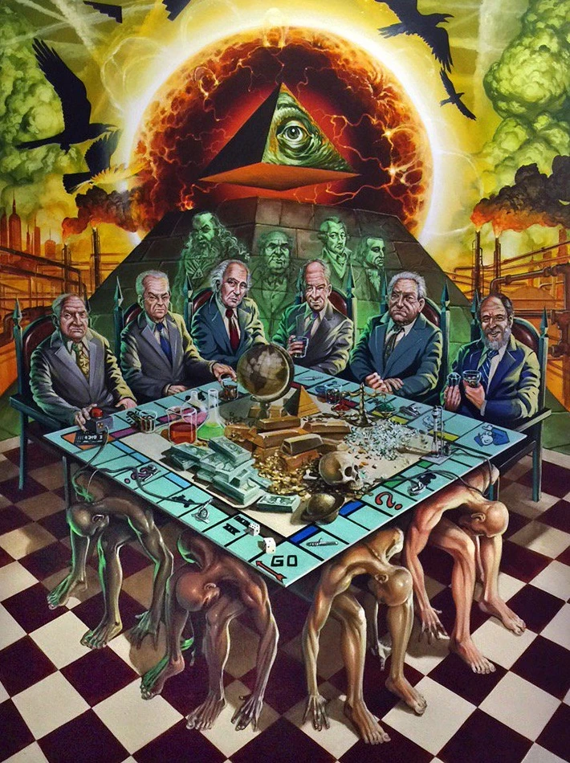
Théorie du complot
Complot réel
Ni l’un ni l’autre
Une théorie du complot : aucun élément vérifiable, et une explication qui englobe tout.
Les institutions financières contrôlent le monde.
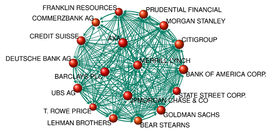
Théorie du complot
Complot réel
Ni l’un ni l’autre
Affirmation vague : ni secret, ni acteurs nommés. Que veut dire « contrôler » ici ?
Les institutions financières contrôlent secrètement le monde.
Théorie du complot
Complot réel
Ni l’un ni l’autre
Un mot change tout : « secrètement » fait basculer l’affirmation du côté du complot.
Les institutions financières contrôlent en partie le monde.
Théorie du complot
Complot réel
Ni l’un ni l’autre
Un constat banal, documenté, et que personne n’a besoin de cacher.
L’alunissage américain de 1969 est faux.
Théorie du complot
Complot réel
Ni l’un ni l’autre
Une théorie du complot : il faudrait que des dizaines de milliers de personnes se taisent depuis 1969.
Les six voyages de la Terre à la Lune, entre 1969 et 1972, sont faux.
Théorie du complot
Complot réel
Ni l’un ni l’autre
Même théorie, en plus large : plus le complot supposé est gros, moins il est tenable.
Le 11 septembre a été organisé par le gouvernement américain.
Théorie du complot
Complot réel
Ni l’un ni l’autre
Une théorie du complot, parmi les plus étudiées par la recherche.
Le 11 septembre a été organisé par Al-Qaida.
Théorie du complot
Complot réel
Ni l’un ni l’autre
Un complot réel : une attaque coordonnée en secret par des acteurs identifiés.
Le 11 septembre a été organisé par la Chine.
Théorie du complot
Complot réel
Ni l’un ni l’autre
Une théorie du complot : la même forme, mais aucun élément pour l’étayer.
Les compagnies pétrolières ont fait pression sur le gouvernement américain pour envahir l’Irak.
Théorie du complot
Complot réel
Ni l’un ni l’autre
Du lobbying, largement documenté et rarement secret : ce n’est pas la même chose qu’un complot.
La princesse Diana a été secrètement assassinée par la famille royale.
Théorie du complot
Complot réel
Ni l’un ni l’autre
Une théorie du complot : les enquêtes officielles, française puis britannique, ont écarté l’hypothèse d’un assassinat.
Les aliens existent, mais leur existence est cachée par le gouvernement.
Théorie du complot
Complot réel
Ni l’un ni l’autre
Une théorie du complot : l’élément « caché par le gouvernement » est invérifiable par construction.
Les aliens existent.
Théorie du complot
Complot réel
Ni l’un ni l’autre
Une hypothèse, pas un complot : personne n’est accusé de cacher quoi que ce soit.
La CIA est responsable de la mort du président John F. Kennedy.
Théorie du complot
Complot réel
Ni l’un ni l’autre
Une théorie du complot : la plus ancienne des grandes théories contemporaines.
La CIA est responsable du coup d’État au Guatemala en 1954.
Théorie du complot
Complot réel
Ni l’un ni l’autre
Un complot réel : l’opération PBSuccess, reconnue et déclassifiée depuis.
La NSA espionne secrètement des millions de personnes.
Théorie du complot
Complot réel
Ni l’un ni l’autre
Un complot réel : révélé en 2013 par les documents d’Edward Snowden.
La tentative d’assassinat de Donald Trump a été fomentée par les démocrates.
Théorie du complot
Complot réel
Ni l’un ni l’autre
Une théorie du complot : l’enquête du FBI a conclu que le tireur avait agi seul.
La tentative d’assassinat de Donald Trump a été mise en scène par les républicains.
Théorie du complot
Complot réel
Ni l’un ni l’autre
Une théorie du complot aussi : un spectateur a été tué ce jour-là. La même image nourrit deux complots opposés.
Le meurtrier de Charlie Kirk a été manipulé par la propagande de gauche pour le tuer.
Théorie du complot
Complot réel
Ni l’un ni l’autre
Une lecture politique, pas un complot démontré : aucune coordination secrète n’a été établie.
Le père Noël offre des cadeaux aux enfants sages du monde entier.
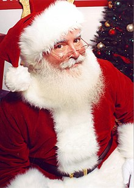
Théorie du complot
Complot réel
Ni l’un ni l’autre
Coordination secrète de plusieurs personnes… mais sans but malveillant. Il manque une pièce à la définition.
Quelles sont, selon vous, les caractéristiques d’une théorie du complot ?
Définition
Un complot
Coordination en secret de plusieurs personnes, généralement puissantes, dans le but de porter atteinte à une personne ou un groupe de personnes.
Définition
« Théorie »
Définition commune : quelque chose de possible, synonyme d’hypothèse.
Définition scientifique : un modèle explicatif, qui peut être vrai ou faux selon la solidité du modèle.
Définitions des théories du complot
« Tentative pour expliquer les causes ultimes d’évènements sociaux et politiques importants, et de circonstances, par l’affirmation d’une intrigue par deux ou plusieurs acteurs puissants. » (Douglas et al., 2019)
« Une attribution d’une intention délibérée à quelque chose qui est plus susceptible d’être accidentel ou non intentionnel. Et, pour affiner cette définition, on pourrait ajouter : l’attribution d’une action secrète à une partie qui pourrait être bien plus raisonnablement expliquée comme l’action moins secrète et moins compliquée d’une autre. » (Aaronovitch, 2010)
Définition
Groupe social
Un ensemble de personnes qui se reconnaissent comme membres d’une même catégorie (une nation, une religion, un parti, un métier, une génération…) et qui en tirent une partie de leur identité.
Endogroupe (in-group) : le groupe auquel j’appartiens, le « nous ».
Exogroupe (out-group) : un groupe auquel je n’appartiens pas, le « eux ».
Brouillon de définition, à corriger. Source de référence : Tajfel, H. & Turner, J. C. (1979). An integrative theory of intergroup conflict. In W. G. Austin & S. Worchel (Eds.), The social psychology of intergroup relations (pp. 33-47). Brooks/Cole. Leur définition du groupe : « a collection of individuals who perceive themselves to be members of the same social category, share some emotional involvement in this common definition of themselves, and achieve some degree of social consensus about the evaluation of their group and of their membership of it ». Une même personne appartient à beaucoup de groupes à la fois ; l’endogroupe et l’exogroupe changent selon la situation (un supporter de l’OM face à un supporter du PSG, puis deux Français face à l’équipe d’Angleterre).
Les théories du complot peuvent se diviser en deux catégories.
In-group
Out-group
Il y a donc deux manières de voir les théories du complot
Soit il s’agit « simplement » d’une tentative d’explication, qui peut être vraie ou fausse, mais qui n’est dans tous les cas pas prouvée.
Soit il s’agit d’une hypothèse par essence fausse, ce qui la distingue du « complot », qui est vrai.
C’est quoi, être « complotiste » ?
Ce que ce n’est pas : penser que les politiciens mentent parfois, que les médias se trompent parfois.
Croire à une théorie du complot fait-il de nous un complotiste ?
Ma définition : est complotiste une personne dont le prisme principal d’explication des évènements du monde est le complot. C’est un postulat par défaut.
« Mentalité complotiste »
Croire qu’un complot est possible ne fait pas de nous un complotiste, d’autant que certains complots sont réels.
Mais une personne avec une « mentalité complotiste » va postuler l’existence de complots pour expliquer le monde.
Que pensez-vous des affirmations suivantes ?
« Les théories du complot sont un phénomène récent. »
Vrai
Faux
Non : elles sont aussi vieilles que la politique
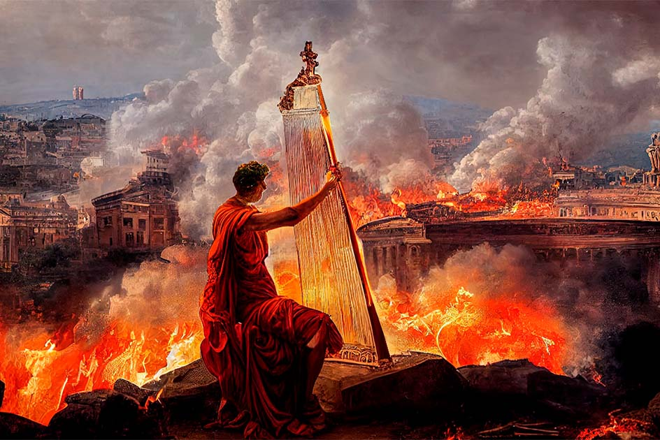
Une des plus anciennes et célèbres théories du complot est l’idée que l’empereur Néron a volontairement mis le feu à Rome.
Cet évènement fut suivi d’une autre théorie du complot : les chrétiens furent accusés à leur tour d’avoir mis le feu à Rome.
« Les théories du complot sont un phénomène occidental. »
Vrai
Faux
Non : on en trouve partout
De nombreuses études montrent que les théories du complot sont universelles et existent dans toutes les sociétés (Van Prooijen & Douglas, 2018).
Au Moyen-Orient (Nyhan & Zeitzoff, 2018) : « les États-Unis aident secrètement l’État islamique »,
en Asie du Sud (Reid, 2010),
en Afrique (Fassin, 2010) : « le virus du sida a été introduit délibérément en Afrique »,
en Amérique latine (Carey, 2019) : « les États-Unis ont tué Chávez en lui donnant un cancer ».
Exemples tirés des études : Nyhan & Zeitzoff (2018, Journal of Politics), sondage au Moyen-Orient et en Afrique du Nord, item « The United States is secretly trying to help the Islamic State (ISIS) take power in Syria and Iraq ». Fassin, sur le sida en Afrique du Sud (EMBO Reports, 2003 ; Social Anthropology, 2008) : « the virus was introduced deliberately into the continent ». Carey (2019, Latin American Research Review), sondage LAPOP 2016 au Venezuela : « Agents of the United States helped to kill President Hugo Chávez by giving him materials that induce cancer ».
« Il n’y a jamais eu autant de personnes croyant aux théories du complot. »
Vrai
Faux
Là encore, les données ne le montrent pas
De nombreuses études montrent que le nombre de personnes qui croient aux théories du complot est plutôt stable depuis plusieurs décennies.
« Little evidence has been provided to demonstrate that beliefs in conspiracy theories have, in fact, increased over time. » (Uscinski, 2022)
Le complotisme est-il une histoire d’intelligence ?
American Psychological Association
Définition de l’intelligence
« The ability to derive information, learn from experience, adapt to the environment, understand, and correctly utilize thought and reason. »
« La capacité à déduire des informations, apprendre de l’expérience, s’adapter à l’environnement, comprendre et utiliser correctement la pensée et la raison. »
https://dictionary.apa.org/intelligence
Comment mesurer le lien entre l’intelligence et le complotisme ?
Complotisme
?
QI
Comment pourrait-on mesurer « l’intelligence » ?
Devinette éclairQuick riddle
Répondez vite, sans réfléchir…Answer fast, without thinking…
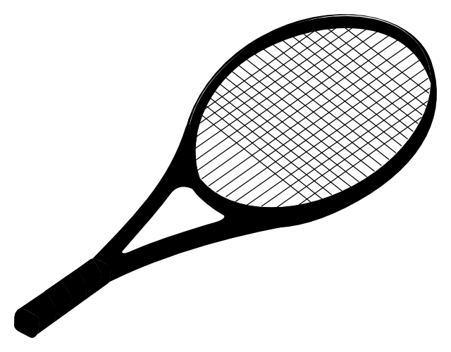
12 €€12
Une raquette et une balle coûtent 12 € au total.A bat and a ball cost €12 in total.
La raquette coûte 10 € de plus que la balle.The bat costs €10 more than the ball.
Combien coûte la balle ?How much does the ball cost?
=
€
+ 10 € ↓+ €10 ↓
=
€
+
=
€
Taper un prix dans la case de la balle : la raquette (balle + 10 €) et le total (balle + raquette) se calculent tout seuls. Essayer 2 : raquette 12, total 14, ça ne marche pas. Essayer 1 : raquette 11, total 12. La virgule est acceptée (0,5 donne 10,5 et 11).
Deux façons de penserTwo ways of thinking
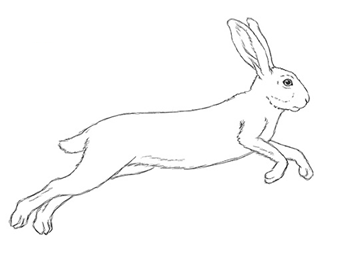
Le système intuitifThe intuitive system
Fonctionne vite ! Consomme peu d'énergie. Peut faire des erreurs.Works fast! Uses little energy. Can make mistakes.
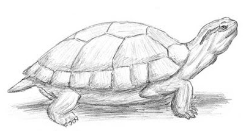
Le système analytiqueThe analytical system
Fonctionne lentement. Consomme beaucoup d'énergie. Est plus rationnel, plus analytique.Works slowly. Uses a lot of energy. Is more rational, more analytical.
… measures of thinking dispositions in a British sample (N = 990). Results indicated that a stronger belief in conspiracy theories was significantly associated with lower analytic thinking and open-mindedness and greater intuitive thinking. In Studies 2–4, we …
… mesures des dispositions de pensée dans un échantillon britannique (N = 990). Les résultats ont indiqué qu’une croyance plus forte aux théories du complot était significativement associée à une pensée analytique et une ouverture d’esprit plus faibles, et à une pensée intuitive plus forte. Dans les études 2 à 4, nous …
Référence : Swami, V., Voracek, M., Stieger, S., Tran, U. S., & Furnham, A. (2014). Analytic thinking reduces belief in conspiracy theories. Cognition, 133(3), 572-585. https://doi.org/10.1016/j.cognition.2014.08.006 Analytic thinking reduces belief in conspiracy theories (Swami et al., 2014). Van Prooijen et al., Cognitive processes.
Those holding stronger COVID-19 conspiracy theory beliefs are more likely to reason emotively, feel less socio-political control, mistrust others, have lower verbal ability and adhere less to COVID-19 guidelines. The social and health implications of these findings are discussed.
Les personnes qui adhèrent le plus aux théories du complot sur le COVID-19 sont plus susceptibles de raisonner de manière émotionnelle, de ressentir moins de contrôle sociopolitique, de se méfier des autres, d’avoir une aptitude verbale plus faible et de moins respecter les consignes liées au COVID-19. Les implications sociales et sanitaires de ces résultats sont discutées.
Référence : Jones, C., Galbraith, N., Boyda, D., Martin, D. B. H., & Jackson, K. (2023). A latent profile analysis of COVID-19 conspiracy beliefs: Associations with thinking styles, mistrust, socio-political control, need for closure and verbal intelligence. Personality and Individual Differences, 207, 112155. https://doi.org/10.1016/j.paid.2023.112155
Mémoire de travail, besoin de cognition et pensée complotiste
We raise the hypotheses that there is a main effect of Working Memory (WM) as well as an interaction between WM and Need for Cognition (NC) on subjects’ propensity towards believing in conspiracy theories. An empirical study confirms that subjects with high WM capacities tend to hold conspiratorial beliefs to a lesser extent than subjects with lower WM capacities. An interaction effect was also present as beliefs in conspiracy theories tended to increase with increasing levels of NC for subjects with low WM capacities but to decrease for subjects showing both high WM capacities and high NC levels. Reported results persist in the presence of paranoid ideations (a strong and reliable predictor of conspiratorial beliefs) as a control measure.
Nous faisons l’hypothèse d’un effet principal de la mémoire de travail (MT), ainsi que d’une interaction entre la MT et le besoin de cognition (BC), sur la propension des participants à croire aux théories du complot. Une étude empirique confirme que les participants ayant de fortes capacités de mémoire de travail ont tendance à moins adhérer aux croyances complotistes que ceux dont les capacités sont plus faibles. Un effet d’interaction apparaît également : la croyance aux théories du complot tend à augmenter avec le besoin de cognition chez les participants à faible mémoire de travail, mais à diminuer chez ceux qui ont à la fois une forte mémoire de travail et un fort besoin de cognition. Ces résultats se maintiennent quand on contrôle les idéations paranoïaques (un prédicteur fort et fiable des croyances complotistes).
Référence : Bliznashki, S. (2024). Working memory and need for cognition influence beliefs in conspiracy theories. Journal of Cognitive Psychology, 36(4), 457-463. https://doi.org/10.1080/20445911.2024.2335108 tandfonline.com/doi/full/10.1080/20445911.2024.2335108 ; Wagner-Egger et al., 2019 ; Brotherton & French, 2015 ; Imhoff & Bruder, 2014 ; Douglas et al., 2015 ; Tempel & Alcock, 2015. Contre : Dieguez et al., 2015.
The main aim of the study was to replicate and extend van Prooijen’s findings on how education and its outcomes (cognitive complexity, subjective social standing, self-esteem, a feeling of control and powerlessness, cognitive reflection, epistemic curiosity and scientific reasoning) predict conspiracy beliefs. In two studies (Study 1: N = 497, Mage = 49.06, SDage = 14.92; Study 2: N = 482, Mage = 47.45, SDage = 15.87), subjective socioeconomic status and cognitive reflection (Study 1) and a feeling of powerlessness and scientific reasoning (Study 2) contributed to the negative relationship between education level and belief in conspiracy theories. These results showed the connection of education to socioeconomic status, a feeling of control and analytic thinking (cognitive reflection, scientific reasoning) and their power to reduce conspiracy beliefs.
L’objectif principal de l’étude était de répliquer et d’étendre les résultats de van Prooijen sur la manière dont l’éducation et ses effets (complexité cognitive, statut social subjectif, estime de soi, sentiment de contrôle et d’impuissance, réflexion cognitive, curiosité épistémique et raisonnement scientifique) prédisent les croyances complotistes. Dans deux études (étude 1 : N = 497, Mâge = 49,06, ETâge = 14,92 ; étude 2 : N = 482, Mâge = 47,45, ETâge = 15,87), le statut socio-économique subjectif et la réflexion cognitive (étude 1), puis le sentiment d’impuissance et le raisonnement scientifique (étude 2), ont contribué à la relation négative entre niveau d’éducation et croyance aux théories du complot. Ces résultats montrent le lien entre l’éducation et le statut socio-économique, le sentiment de contrôle et la pensée analytique (réflexion cognitive, raisonnement scientifique), et leur capacité à réduire les croyances complotistes.
Référence : Ballová Mikušková, E. (2023). Education and conspiracy beliefs: A replication of van Prooijen (2017). Applied Cognitive Psychology, 37(1), 174-188. https://doi.org/10.1002/acp.4037 Van Prooijen, Why Education Predicts Decreased Belief in Conspiracy Theories (2016) ; Douglas et al., 2016.
Un petit jeu pour commencerA little game to start with
Les gens qui s'endorment avec les chaussures aux pieds ont plus de chances d'avoir mal à la tête en se réveillant le lendemain.People who fall asleep with their shoes on are more likely to wake up with a headache the next day.
Pourquoi ?Why?
Est-ce que dormir avec ses chaussures provoque le mal de tête ? Ou bien y a-t-il autre chose qui explique les deux à la fois ?Does sleeping with your shoes on cause the headache? Or is there something else that explains both at once?
Dormir avec ses chaussures
Avoir mal à la tête
?
L’alcool
1er clic : la flèche qu’on croit voir, dormir avec ses chaussures provoquerait le mal de tête (illusion de causalité). 2e clic : on pourrait tout aussi bien lire la flèche dans l’autre sens (avoir mal à la tête ferait qu’on s’endort sans se déchausser). 3e clic : les deux flèches s’effacent, un troisième facteur explique peut-être les deux. 4e clic : l’alcool, on rentre ivre, on s’endort tout habillé, et on se réveille avec la gueule de bois.
Trois mots à ne pas confondreThree words not to confuse
Les personnes ayant un niveau d’éducation élevé sont moins susceptibles que les personnes peu diplômées de croire aux théories du complot. On ne sait pas encore pourquoi, car l’éducation prédit toute une série d’effets cognitifs, émotionnels et sociaux. Cette recherche visait à identifier les médiateurs de la relation entre éducation et croyances complotistes. Les résultats de l’étude 1 ont révélé trois médiateurs indépendants de cette relation : la croyance en des solutions simples à des problèmes complexes, le sentiment d’impuissance et la classe sociale subjective. Un échantillon représentatif à l’échelle nationale (étude 2) a reproduit ces résultats, sauf pour la classe sociale subjective. De plus, les variations de la pensée analytique expliquaient statistiquement le chemin passant par la croyance en des solutions simples. J’en conclus que la relation entre éducation et croyances complotistes ne peut pas se réduire à un mécanisme unique : elle résulte de l’interaction complexe de multiples facteurs psychologiques associés à l’éducation.
Référence : van Prooijen, J.-W. (2017). Why education predicts decreased belief in conspiracy theories. Applied Cognitive Psychology, 31(1), 50-58. https://doi.org/10.1002/acp.3301
Échelle individuelle
Les facteurs du complotisme, chez une personne
Cognitifs
Rationalité Mémoire de travail Désir de cognition
Cliniques
Paranoïa Schizotypie
Motivationnels
Besoin de contrôle Estime de soi Divertissement
Traits de personnalité
Narcissisme Narcissisme collectif Neuroticisme
Dieguez et Delouvée, Psychologie du complotisme. Hornsey et al., Individual, intergroup and nation-level influences on belief in conspiracy theories.
Trois échelles d’analyse
Échelle individuelle
Ce qui se joue dans une tête
Échelle de groupe
Endogroupe contre exogroupe
Échelle internationale
PIB bas Pays collectiviste Pays autoritaire Corruption élevée Confiance politique faible
Imhoff et al., 2022
Mentalité complotiste et croyances complotistes ne sont pas la même chose
Although sometimes used interchangeably, the present review highlights the important differences between generalized worldviews suspecting conspiracy at play (conspiracy mentality) and specific beliefs about the existence of a certain conspiracy (conspiracy theory). In contrast to measures of beliefs in specific conspiracy theories, those of conspiracy mentality are more stable, less malleable, less skewed in their distribution and less contaminated by other ideological content. These differences have important implications for empirical research and the theorizing of conspiracy beliefs. Building on an analogy of personality traits, we argue that conspiracy mentality is a relatively stable readiness to interpret world events as being caused by plots hatched in secret, whereas specific conspiracy beliefs are then manifest indicators (partially contaminated by other dispositions).
Bien qu’on les emploie parfois l’un pour l’autre, cette revue souligne les différences importantes entre une vision générale du monde qui soupçonne des complots à l’œuvre (la mentalité complotiste) et des croyances précises en l’existence d’un complot donné (la théorie du complot). Contrairement aux mesures de croyance en des théories du complot précises, celles de la mentalité complotiste sont plus stables, moins malléables, moins asymétriques dans leur distribution et moins contaminées par d’autres contenus idéologiques. Ces différences ont des implications importantes pour la recherche empirique et la théorisation des croyances complotistes. En nous appuyant sur une analogie avec les traits de personnalité, nous soutenons que la mentalité complotiste est une disposition relativement stable à interpréter les évènements du monde comme causés par des complots ourdis en secret, tandis que les croyances complotistes précises en sont des indicateurs manifestes (en partie contaminés par d’autres dispositions).
Référence : Imhoff, R., Bertlich, T., & Frenken, M. (2022). Tearing apart the “evil” twins: A general conspiracy mentality is not the same as specific conspiracy beliefs. Current Opinion in Psychology, 46, 101349. https://doi.org/10.1016/j.copsyc.2022.101349 Tearing apart the “evil” twins: a general conspiracy mentality is not the same as specific conspiracy beliefs (Imhoff et al., 2022).
Results. Twenty-seven percent of blacks held AIDS-conspiracy views and an additional 23% were undecided. Endorsing AIDS-conspiracy beliefs was not related to blacks’ age or income but was related to higher levels of education. Blacks who agreed that AIDS is a conspiracy against them tended to be culturally traditional, college-educated men who had experienced considerable racial discrimination.
Résultats. Vingt-sept pour cent des Noirs adhéraient à des thèses complotistes sur le sida, et 23 % de plus étaient indécis. L’adhésion aux croyances complotistes sur le sida n’était liée ni à l’âge ni au revenu des Noirs, mais à un niveau d’éducation plus élevé. Les Noirs qui pensaient que le sida est un complot dirigé contre eux étaient plutôt des hommes culturellement traditionnels, diplômés de l’université, ayant subi une discrimination raciale importante.
Référence : Klonoff, E. A., & Landrine, H. (1999). Do Blacks believe that HIV/AIDS is a government conspiracy against them? Preventive Medicine, 28(5), 451-457. https://doi.org/10.1006/pmed.1999.0463
Référence : Mays, V. M., Coles, C. N., & Cochran, S. D. (2012). Is there a legacy of the U.S. Public Health Syphilis Study at Tuskegee in HIV/AIDS-related beliefs among heterosexual African Americans and Latinos? Ethics & Behavior, 22(6), 461-471. https://doi.org/10.1080/10508422.2012.730805
Résultats
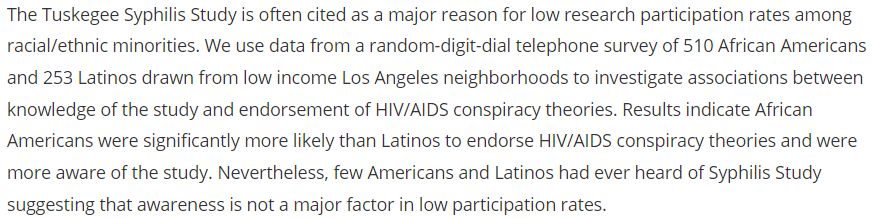
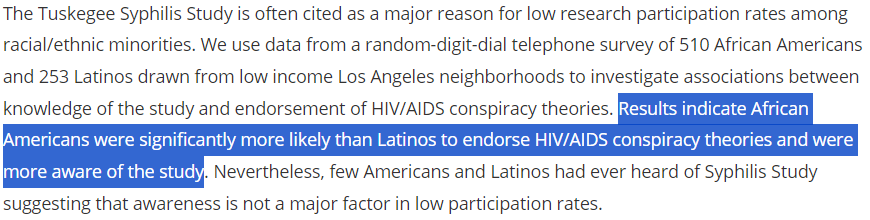
Attention : cette étude possède de nombreuses limites, notamment le fait que les connaissances mesurées sont parcellaires : elles peuvent être corrélées à une pensée complotiste sans en être la cause.
Conspiracy beliefs are not just generated by “under-the-skull” individual factors, but are shaped also by cultural, economic, and institutional realities. A scan of the literature—complemented by our own secondary data analyses—suggests a reasonable convergence of evidence that conspiracy beliefs are higher in nations that are more corrupt, more collectivist, and lower in GDP per capita. There is some evidence that conspiracy beliefs may also be shaped by economic inequality, power distance, and authoritarianism, although the evidence base is thin. We also review literature that examines how individual correlates of conspiracy beliefs vary across nations. We discuss challenges associated with conducting international research on conspiracy beliefs and chart a future research agenda for creating truly global insights into conspiracist thinking.
Les croyances complotistes ne sont pas seulement produites par des facteurs individuels « sous le crâne » : elles sont aussi façonnées par des réalités culturelles, économiques et institutionnelles. Un examen de la littérature, complété par nos propres analyses de données secondaires, suggère une convergence raisonnable des preuves : les croyances complotistes sont plus fortes dans les pays plus corrompus, plus collectivistes et au PIB par habitant plus faible. Certains éléments indiquent qu’elles pourraient aussi être façonnées par les inégalités économiques, la distance hiérarchique et l’autoritarisme, bien que les preuves soient minces. Nous passons aussi en revue les travaux qui examinent comment les corrélats individuels des croyances complotistes varient d’un pays à l’autre. Nous discutons des difficultés de la recherche internationale sur les croyances complotistes et traçons un programme de recherche pour obtenir une vision véritablement mondiale de la pensée complotiste.
Référence : Hornsey, M. J., & Pearson, S. (2022). Cross-national differences in willingness to believe conspiracy theories. Current Opinion in Psychology, 47, 101391. https://doi.org/10.1016/j.copsyc.2022.101391
En conclusion
Oui, on peut tracer des liens entre croyances complotistes et intelligence.
C’est un facteur parmi beaucoup d’autres.
Il est intéressant de se demander pourquoi nous nous focalisons sur cette approche.
Une vision globale du phénomène est essentielle si nous voulons lui apporter une réponse.
Van Prooijen & Douglas, 2018
Les théories du complot sont…
Conséquentielles
Les personnes qui y croient agissent conformément à ces croyances.
Universelles
Elles ne sont pas restreintes à notre lieu ni à notre époque.
Émotionnelles
La pensée y est plus intuitive qu’analytique.
Sociales
Elles consolident le groupe interne et antagonisent le groupe externe.
Les croyances vont rarement seules
Les personnes qui croient en une théorie du complot sont plus susceptibles de croire en d’autres théories du complot.
Les personnes qui croient au paranormal sont plus susceptibles de croire en des théories du complot.
Les personnes qui croient en des pseudo-sciences sont plus susceptibles de croire en des théories du complot.
Les maladies sont provoquées par les lobbies pharmaceutiques pour vendre des vaccins.
Les États sont corrompus et payés par l’industrie pharmaceutique.
Les médias sont achetés pour taire les effets secondaires des vaccins.
Les médecins qui disent la vérité sont réduits au silence.
Les épidémies sont créées en laboratoire pour faire peur.
Une théorie du complot en appelle d’autres : pour qu’elle tienne, il faut que d’autres acteurs (États, médias, médecins) soient eux aussi complices. C’est l’idée d’un système de croyances qui se soutiennent les unes les autres (Goertzel, 1994 ; Wood, Douglas & Sutton, 2012). Un clic par flèche.
Les fantômes existent.
Mais leur existence est cachée par les États.
Tout comme on nous cache l’existence des aliens.
Les scientifiques savent, mais se taisent.
Les médias ridiculisent les témoins pour étouffer l’affaire.
Croyances paranormales et croyances complotistes vont souvent ensemble (Darwin, Neave & Holmes, 2011 ; Brotherton et al., 2013). Un clic par flèche.
Toutes ces maladies peuvent être soignées par des plantes naturelles.
C’est pour ça que les laboratoires veulent nous cacher cette réalité : pour nous vendre leurs vaccins.
Pseudo-sciences et complotisme : si un remède naturel marchait, pourquoi ne le dit-on pas ? La réponse complotiste : parce qu’on nous le cache (Lobato et al., 2014). Un clic pour la flèche.
Andrew Wakefield
Andrew Wakefield
Chercheur britannique en médecine.
Il affirme avoir établi une relation de cause à effet entre le vaccin rougeole-oreillons-rubéole (ROR) et ce qu’il appelle « l’entérocolite autistique ».
Le résultat de ses travaux est publié en 1998 dans The Lancet, prestigieuse publication internationale de médecine générale.
Puis…
Son étude est critiquée dès l’année suivante par les chercheurs qui ont contribué à l’écrire.
On révèle des conflits d’intérêt de Wakefield.
Comment va-t-on faire un lien avec le complotisme ?
À l’échelle individuelle
🧠Approche cognitive
Les personnes qui croient aux théories du complot ont tendance à avoir une réflexion « intuitive » plus qu’analytique, basée sur l’émotion, et à faire des erreurs d’heuristique de pensée (« rien n’arrive par hasard »).
Hornsey et al., 2023 : Individual, intergroup and nation-level influences on belief in conspiracy theories.
À l’échelle individuelle
🩺Approche clinique
Il y a des corrélations entre de nombreuses pathologies mentales et la croyance complotiste (cela ne veut pas dire que tous les complotistes ont des pathologies).
Liens entre un état émotionnel stressé, la dépression, et le complotisme.
À l’échelle individuelle
🎯Approche motivationnelle
Les théories du complot seraient un moyen de reprendre le contrôle si l’on se sent déclassé (ces résultats sont remis en question).
Elles permettraient également d’obtenir une validation sociale.
Enfin, les théories du complot sont distrayantes.
À l’échelle individuelle
🎭Traits de personnalité
Aucun lien avec les traits classiques de la personnalité (les « Big Five »).
On trouve des liens avec la « triade sombre » : narcissisme, machiavélisme, psychopathie.
Statistiquement, les complotistes sont donc plus « égoïstes », privilégiant leur propre intérêt par rapport à celui des autres.
Dynamique intergroupe
Endogroupe et exogroupe
Les gens sont davantage convaincus que les personnes du groupe extérieur sont capables de conspiration, et moins enclins à croire leur propre groupe capable de telles actions.
Dans les années 2000, seuls 22 % des Canadiens pensaient que le 11 septembre était un coup des Américains, contre 73 % des personnes interrogées dans sept pays musulmans.
Sunstein, C. R. & Vermeule, A. Conspiracy theories: causes and cures. J. Polit. Phil. 17, 202–227 (2009).
Une hypothèse, contestée
1Elle vient de la « psychologie évolutionnaire » : il serait préférable de voir des menaces dans le groupe extérieur même si elles sont inexistantes.
➜
2Plus un groupe se sent menacé, plus il va croire aux théories du complot.
➜
3C’est pourquoi les personnes victimes de discriminations ont davantage tendance à croire aux théories du complot.
À l’échelle internationale
Ces résultats sont à prendre avec précaution : il est très difficile de savoir qui influence quoi à ce niveau, il y a beaucoup trop de facteurs.
Mais voilà ce qu’on sait.
Les gens croient davantage aux théories du complot lorsque…
📉les indicateurs économiques sont bas (PIB) ;
⚖️la perception d’inégalités économiques est forte ;
🏛️la confiance dans les institutions politiques est faible ;
💰le pays possède un degré de corruption élevé ;
👥le pays est davantage « collectiviste » qu’individualiste ;
⚔️les théories du complot concernent un pays ennemi.
Cours 2
Fake News, complotisme et esprit critique
Click to play the video.
Récitez l'alphabet à l'enversRecite the alphabet backwards
Répondre
Oui
Non
Encore un essaiOne more try
Fixe… ou en mouvement ?Still… or moving?
Cliquez pour lancer la vidéo.Click to play the video.
DéfinitionDefinition
Qu'est-ce qu'une Fake News ?What is a fake news story?
Une information qui est en contradiction avec l'état actuel des connaissances sur un sujet, partagée parfois de bonne foi, même si on ne peut pas la vérifier par nous-même.A piece of information that contradicts the current state of knowledge on a topic, sometimes shared in good faith, even when we can't verify it ourselves.
Petit jeuQuick game
Est-ce que je dis la vérité ?
FauxFalseVraiTrue
Négatif (faux)Against (false)
NeutreNeutral
Positif (vrai)For (true)
Les deux manières de raisonner
Question
Regroupement des preuves
Conclusion
Conclusion
Sélection des preuves
Interprétation des preuves
Le réflexe : vrai, ou faux ?
VRAI
FAUX
Mais NOTRE perception du vrai et du faux dépend de beaucoup de paramètres
Qu’est-ce que je juge crédible ?
Ce que je juge crédible dépend de ce que je sais déjà,
de qui me le dit,
et de ce que j’ai envie de croire.
Crédible ≠ Vrai
Une information peut être parfaitement crédible et complètement fausse. Et l’inverse aussi.
Qu’est-ce qui est une Fake News ?
Vrai ou faux ? (1/7)True or false? (1/7)
Emmanuel Macron est président de la République.Emmanuel Macron is President of the Republic.
Vrai ou faux ? (2/7)True or false? (2/7)
Le plateau de Gizeh se trouve en Égypte.The Giza plateau is located in Egypt.
Vrai ou faux ? (3/7)True or false? (3/7)
Le président a rencontré un alien.The president met an alien.
Vrai ou faux ? (4/7)True or false? (4/7)
Le soleil est une étoile.The sun is a star.
Vrai ou faux ? (5/7)True or false? (5/7)
L'étoile du berger est une étoile.The "shepherd's star" is a star.
Vrai ou faux ? (6/7)True or false? (6/7)
L'association des Végans aux États-Unis demande la fin des biscuits en forme d'animaux.A vegan association in the US is demanding an end to animal-shaped biscuits.
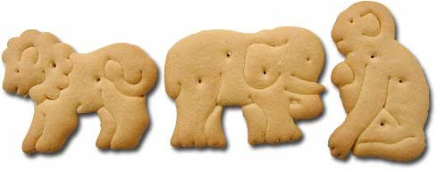
Vrai ou faux ? (7/7)True or false? (7/7)
Il existe une espèce de méduse immortelle.There is a species of immortal jellyfish.
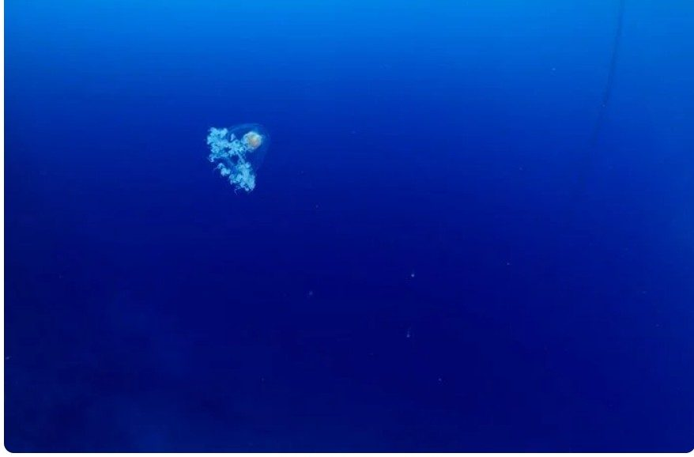
PARIS MATCH
20 octobre 2025
Par la rédaction, avec AFP
Cambriolage spectaculaire au Louvre : les voleurs ont emporté des bijoux d'une valeur inestimable en sept minutes
Dimanche matin, peu après l'ouverture, des cambrioleurs ont grimpé avec une nacelle jusqu'à la galerie d'Apollon, découpé une vitre à la disqueuse et emporté huit joyaux de la couronne, dont le diadème de l'impératrice Eugénie.
🔎 Autres sources💬 2 314 commentaires
1
Fiabilité de la sourceReliability of the source
2
Fiabilité de l'interlocuteurReliability of the speaker
3
Niveau de preuvesLevel of evidence
4
Plusieurs sources fiables en parlentSeveral reliable sources report it
5
Crédibilité de l'informationCredibility of the information
6
Commentaires et critiques de l'informationComments and criticism of the information
Paris Match Belgique, magazine d'actualité connu.Paris Match Belgique, magazine d'actualité connu.
Comment évaluez-vous cet élément ?How do you rate this element?
Une dépêche de l'AFP, agence de presse internationale.Une dépêche de l'AFP, agence de presse internationale.
Comment évaluez-vous cet élément ?How do you rate this element?
Une partie de la scène filmée au téléphone, objets volés nommés, enquête ouverte.Une partie de la scène filmée au téléphone, objets volés nommés, enquête ouverte.
Comment évaluez-vous cet élément ?How do you rate this element?
Oui : Le Temps, la DH, Futura… tous les grands médias.Oui : Le Temps, la DH, Futura… tous les grands médias.
Comment évaluez-vous cet élément ?How do you rate this element?
Incroyable, mais rien d'impossible : nacelle, disqueuse, 7 minutes.Incroyable, mais rien d'impossible : nacelle, disqueuse, 7 minutes.
Comment évaluez-vous cet élément ?How do you rate this element?
Le musée confirme : il reste fermé le lendemain pour l'enquête.Le musée confirme : il reste fermé le lendemain pour l'enquête.
Comment évaluez-vous cet élément ?How do you rate this element?
Je pense que c'est fauxI think it's false
Je pense que c'est vraiI think it's true
VRAI, improbable. Vol des joyaux de la couronne au Louvre, dimanche 19 octobre 2025 vers 9 h 30, environ 7 minutes. Article réel : Paris Match Belgique (AFP), 20 octobre 2025, https://www.parismatch.be/actualites/monde/2025/10/20/cambriolage-spectaculaire-au-louvre-comment-les-voleurs-ont-emporte-des-bijoux-dune-valeur-inestimable-en-sept-minutes-top-chrono-BFIKUQKPDRAGTLPV3C5MJYUHQY/ . Cliquer dans l'article : le média (1), la signature (2), la phrase de preuve du chapô (3), « Autres sources » (4), le titre (5), les commentaires (6). On peut aussi cliquer sur une sphère.
STYLE & PEOPLE
26 mars 2023
Photo : réseaux sociaux
Le pape François s'affiche dans une doudoune blanche de grand couturier
Fini la soutane : le souverain pontife a été photographié dans les rues de Rome, vêtu d'une immense doudoune blanche et d'une croix en argent. La photo a été vue des millions de fois en un week-end.
🔎 Autres sources💬 8 902 commentaires
1
Fiabilité de la sourceReliability of the source
2
Fiabilité de l'interlocuteurReliability of the speaker
3
Niveau de preuvesLevel of evidence
4
Plusieurs sources fiables en parlentSeveral reliable sources report it
5
Crédibilité de l'informationCredibility of the information
6
Commentaires et critiques de l'informationComments and criticism of the information
Une photo partagée sur Twitter par un compte anonyme.Une photo partagée sur Twitter par un compte anonyme.
Comment évaluez-vous cet élément ?How do you rate this element?
Comment évaluez-vous cet élément ?How do you rate this element?
Une seule image ; en zoomant, des détails déformés.Une seule image ; en zoomant, des détails déformés.
Comment évaluez-vous cet élément ?How do you rate this element?
Oui, mais pour la démentir : Journal du Geek, The Verge.Oui, mais pour la démentir : Journal du Geek, The Verge.
Comment évaluez-vous cet élément ?How do you rate this element?
Le pape en doudoune de luxe dans la rue ? Très surprenant.Le pape en doudoune de luxe dans la rue ? Très surprenant.
Comment évaluez-vous cet élément ?How do you rate this element?
Les internautes repèrent l'IA : image créée avec Midjourney.Les internautes repèrent l'IA : image créée avec Midjourney.
Comment évaluez-vous cet élément ?How do you rate this element?
Je pense que c'est fauxI think it's false
Je pense que c'est vraiI think it's true
FAUX. Image générée par l'IA Midjourney, publiée sur Twitter le 25 mars 2023, devenue virale. Le site « Style & People » est inventé pour l'exercice. Démenti réel : Journal du Geek, Amandine Jonniaux, 28 mars 2023, https://www.journaldugeek.com/2023/03/28/cette-photo-du-pape-en-doudoune-qui-affole-le-web-est-un-fake-cree-par-lia/ . Cliquer dans l'article : le média (1), la signature (2), la phrase de preuve du chapô (3), « Autres sources » (4), le titre (5), les commentaires (6). On peut aussi cliquer sur une sphère.
La Libre
21 novembre 2024
Par La Libre, avec Belga
Une banane vendue 6,2 millions de dollars à New York
« Comedian », l'œuvre de l'artiste italien Maurizio Cattelan, une simple banane scotchée au mur, a été adjugée chez Sotheby's. L'acheteur, Justin Sun, fondateur d'une plateforme de cryptomonnaies, a annoncé qu'il allait la manger.
🔎 Autres sources💬 5 127 commentaires
1
Fiabilité de la sourceReliability of the source
2
Fiabilité de l'interlocuteurReliability of the speaker
3
Niveau de preuvesLevel of evidence
4
Plusieurs sources fiables en parlentSeveral reliable sources report it
5
Crédibilité de l'informationCredibility of the information
6
Commentaires et critiques de l'informationComments and criticism of the information
La Libre Belgique, quotidien belge fondé en 1884.La Libre Belgique, quotidien belge fondé en 1884.
Comment évaluez-vous cet élément ?How do you rate this element?
Belga, l'agence de presse belge.Belga, l'agence de presse belge.
Comment évaluez-vous cet élément ?How do you rate this element?
Vente publique chez Sotheby's, prix et acheteur nommés.Vente publique chez Sotheby's, prix et acheteur nommés.
Comment évaluez-vous cet élément ?How do you rate this element?
Oui : The Art Newspaper, NBC, Gulf News.Oui : The Art Newspaper, NBC, Gulf News.
Comment évaluez-vous cet élément ?How do you rate this element?
Absurde, mais c'est une vente aux enchères officielle.Absurde, mais c'est une vente aux enchères officielle.
Comment évaluez-vous cet élément ?How do you rate this element?
Beaucoup de critiques sur le prix, mais personne ne conteste la vente.Beaucoup de critiques sur le prix, mais personne ne conteste la vente.
Comment évaluez-vous cet élément ?How do you rate this element?
Je pense que c'est fauxI think it's false
Je pense que c'est vraiI think it's true
VRAI, improbable. Vente du 20 novembre 2024 chez Sotheby's New York : 5,2 millions de dollars d'enchère, 6,2 millions frais compris. Article réel : La Libre Belgique (Belga), 21 novembre 2024, https://www.lalibre.be/culture/arts/2024/11/21/une-banane-vendue-62-millions-de-dollars-a-new-york-WXL7QUBCEZG3TLJL4GKXBI25VE/ . L'annonce qu'il allait la manger : NBC, « Crypto investor pays $6 million for a banana and plans to eat it ». Cliquer dans l'article : le média (1), la signature (2), la phrase de preuve du chapô (3), « Autres sources » (4), le titre (5), les commentaires (6). On peut aussi cliquer sur une sphère.
TIME
14 mai 2015
Par Kevin McSpadden
Vous avez désormais une capacité de concentration plus courte que celle d'un poisson rouge
Selon une étude de Microsoft, notre capacité de concentration est passée de 12 secondes en 2000 à 8 secondes aujourd'hui, à cause des smartphones. Un poisson rouge, lui, tiendrait 9 secondes.
🔎 Autres sources💬 1 046 commentaires
1
Fiabilité de la sourceReliability of the source
2
Fiabilité de l'interlocuteurReliability of the speaker
3
Niveau de preuvesLevel of evidence
4
Plusieurs sources fiables en parlentSeveral reliable sources report it
5
Crédibilité de l'informationCredibility of the information
6
Commentaires et critiques de l'informationComments and criticism of the information
TIME, grand magazine américain.TIME, grand magazine américain.
Comment évaluez-vous cet élément ?How do you rate this element?
Kevin McSpadden, journaliste.Kevin McSpadden, journaliste.
Comment évaluez-vous cet élément ?How do you rate this element?
« Une étude de Microsoft » : un rapport marketing, pas une revue scientifique.« Une étude de Microsoft » : un rapport marketing, pas une revue scientifique.
Comment évaluez-vous cet élément ?How do you rate this element?
Oui, des centaines de médias l'ont repris.Oui, des centaines de médias l'ont repris.
Comment évaluez-vous cet élément ?How do you rate this element?
9 secondes pour un poisson rouge : qui l'a mesuré ?9 secondes pour un poisson rouge : qui l'a mesuré ?
Comment évaluez-vous cet élément ?How do you rate this element?
En 2017, la BBC remonte la piste : aucune étude n'existe.En 2017, la BBC remonte la piste : aucune étude n'existe.
Comment évaluez-vous cet élément ?How do you rate this element?
Je pense que c'est fauxI think it's false
Je pense que c'est vraiI think it's true
FAUX, alors que la source est un grand média et que tout le monde en parle (affirmation du Fakemètre). Le rapport de Microsoft Canada (2015) citait le site Statistic Brain, qui citait des organismes n'ayant aucune trace de cette étude. Enquête : Simon Maybin, BBC, 2017. Article réel : TIME, Kevin McSpadden, 14 mai 2015, https://time.com/3858309/attention-spans-goldfish/ (titre original « You Now Have a Shorter Attention Span Than a Goldfish », traduit ici). Cliquer dans l'article : le média (1), la signature (2), la phrase de preuve du chapô (3), « Autres sources » (4), le titre (5), les commentaires (6). On peut aussi cliquer sur une sphère.
Vrai ou faux ?
Les chauves-souris sont aveugles.
Réponse : Faux. Elles voient, et complètent leur vue par l’écholocation.
Vrai ou faux ?
Les pieuvres ont trois cœurs.
Réponse : Vrai. Un cœur principal, et un pour chacune de leurs deux branchies.
Vrai ou faux ?
Le terme « sushi » désigne « poisson cru » en japonais.
Réponse : Faux. « Sushi » désigne le riz vinaigré. Le poisson cru, c’est le sashimi.
Vrai ou faux ?
L’eau tourbillonne dans un sens différent selon l’hémisphère (effet Coriolis).
Réponse : Faux à l’échelle d’un lavabo : la force de Coriolis y est négligeable devant la forme du bac et le mouvement initial de l’eau.
Vrai ou faux ?
Nous avons créé des chats fluorescents.
Réponse : Vrai. Des chats transgéniques fluorescents ont été produits en laboratoire, pour la recherche sur le sida félin.
Vrai ou faux ?
La mousse sur les arbres pousse toujours au nord.
Réponse : Faux. Elle pousse du côté le plus humide, qui dépend du relief, du vent et de l’ombre.
Vrai ou faux ?
Les pyramides ont été construites par des extra-terrestres.
Réponse : Faux. Et c’est une théorie du complot de plein droit : elle suppose une dissimulation générale des égyptologues.
Vrai ou faux ?
Les pyramides ont été construites par des esclaves.
Réponse : Faux, au moins en partie : les fouilles montrent des ouvriers logés, nourris et soignés, pas des esclaves.
Quelle photo est en IA, quelle photo est réelle ?
Vraie photo, ou générée par IA ?
Vraie photo, ou générée par IA ?
Vraie photo, ou générée par IA ?
Réponse : Celle-ci est une vraie photo. Le plus difficile n’est pas de repérer l’IA : c’est d’accepter qu’on ne sait pas.
2
Au-delà du vrai / faux
La Terre tourne autour du Soleil en 365 jours.
Réponse : Presque : 365,2422 jours. C’est pour cela qu’il existe des années bissextiles. « Vrai » et « faux » ne suffisent pas toujours.
La Terre est ronde.
Réponse : Presque : c’est un géoïde, légèrement aplati aux pôles. L’approximation est utile, mais c’est une approximation.
On ne peut pas respirer et avaler en même temps.
Réponse : Vrai chez l’adulte… mais faux chez le nourrisson, qui peut téter et respirer en même temps. Le contexte change la réponse.
Les chiens ne transpirent pas.
Réponse : Presque : ils transpirent très peu, par les coussinets. Ils se refroidissent surtout en haletant.
VraiTrue
FauxFalse
Au clic : les carrés Vrai et Faux avancent l’un vers l’autre ; leur zone de jonction prend une couleur mélangée (violet-marron) : la réalité est plus compliquée que vrai ou faux.
Distinguer une vraie information d'une fausse information n'est pas toujours facile !Telling real information from fake isn't always easy!
Et en plus… même nos yeux peuvent nous tromper.And on top of that… even our eyes can fool us.
Illusion d'optiqueOptical illusion
Quel cercle est plus grand que l'autre ?Which circle is bigger than the other?
This interactive illustration is in French.
Illusion d'optiqueOptical illusion
Les cases A et B sont-elles de la même couleur ?Are squares A and B the same colour?
This interactive illustration is in French.
Regardez bienWatch closely
« Monsieur, c'est mal cadré ! » ."Sir, that's badly framed!" A simple crop is enough to completely change what we think we're seeing.
DéfinitionDefinition
Biais de cadrageFraming bias
La manière dont une information est présentée, son « cadre », influence notre jugement, indépendamment du contenu réel de l'information.The way information is presented, its "frame", shapes our judgement, regardless of the actual content.
Test
Version longue. Le maire de Saint-Denis, Bally Bagayoko, tire la poubelle déjà en feu loin de la grille du lycée Bartholdi, pendant un blocage. Une version coupée (sans le début) a circulé pour faire croire qu'il avait allumé le feu ou qu'il célébrait. Vérifications : Les Surligneurs, Libération CheckNews, TF1 Info. Source : https://www.instagram.com/p/Dd3-IdICYao/
De quelles couleurs sont ces drapeaux ?What colours are these flags?
Drapeau françaisFrench flag
Drapeau russeRussian flag
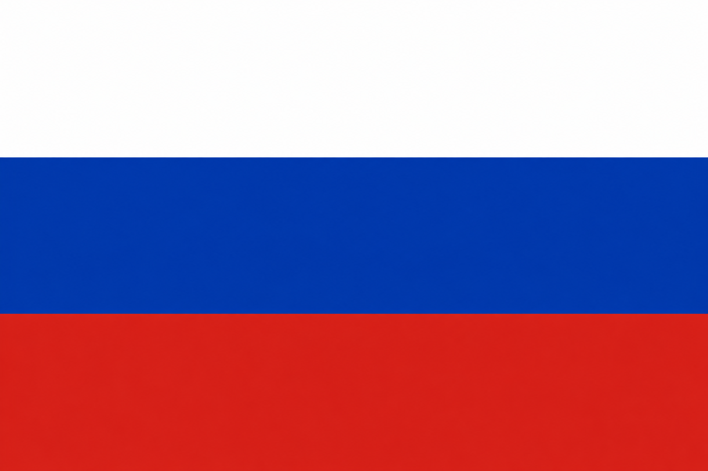
Point de vuePoint of view
Bleu-blanc-rouge… ou drapeau russe ?French flag… or Russian flag?
This interactive illustration is in French.
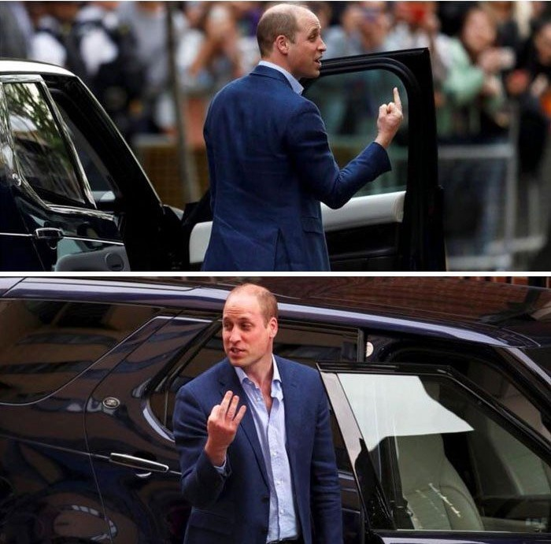
BFMTV @BFMTVSuivre⋮
💬"J'ai tout perdu"
À 82 ans, Paul va être expulsé de sa maison car ses belles-filles ont décidé de la vendre
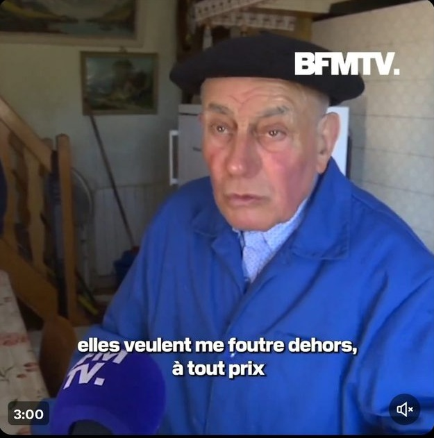
M
Martine 🌻@martine_lili · 1 h
Honteux !!! Mettre un monsieur de 82 ans à la rue… Ces belles-filles sont des p*******s sans cœur 🤬
K
Kévin@kev_du_94 · 1 h
Bande de s*****s. J'espère qu'elles vont tout perdre elles aussi
S
Sandrine B.@sandrine_b · 58 min
Le pauvre… 😢 Il a travaillé toute sa vie pour cette maison et ces deux c*******s le jettent dehors
L
Le Vrai Gaulois@vraigaulois · 55 min
Voilà la famille aujourd'hui. Plus aucun respect pour les anciens. Des o*****s, rien d'autre.
J
Juju@juju_off · 52 min
Moi à sa place je les déshérite direct ces m*****s 😤
N
Nathalie G.@nath_g62 · 50 min
Je pleure en voyant ça. Comment on peut faire ça à son beau-père ?? Elles n'ont aucune honte
D
Dédé du 13@dede13 · 47 min
Qu'elles viennent me dire ça en face, les p*****s 👊
S
Sophie@sophie_75 · 44 min
Partagez un max !!! Il faut que tout le monde sache ce que ces v*******s ont fait 🔁
Tendance du cerveau à diffuser des compétences d'un concept à l'autre
Vidéo Le Parisien du 9 novembre 2026 : extraits de l'allocution de Teddy Riner (candidat à la présidentielle 2027), puis analyse du journal. Si elle ne se lance pas : https://www.youtube.com/watch?v=jIfNKcByuzE
Biais de popularité
Tendance du cerveau à considérer une personne compétente car elle est célèbre
This video is in French.
Imaginez…Imagine…
Il est tard, vous êtes chez vous, et vous allez sur les réseaux sociaux pour vous détendre…It's late, you're at home, and you open social media to unwind…
Deux publications s'affichent. Sur laquelle cliquez-vous ?Two posts show up. Which one do you click?
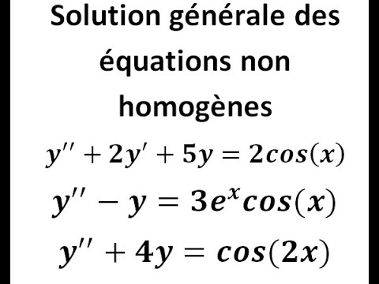
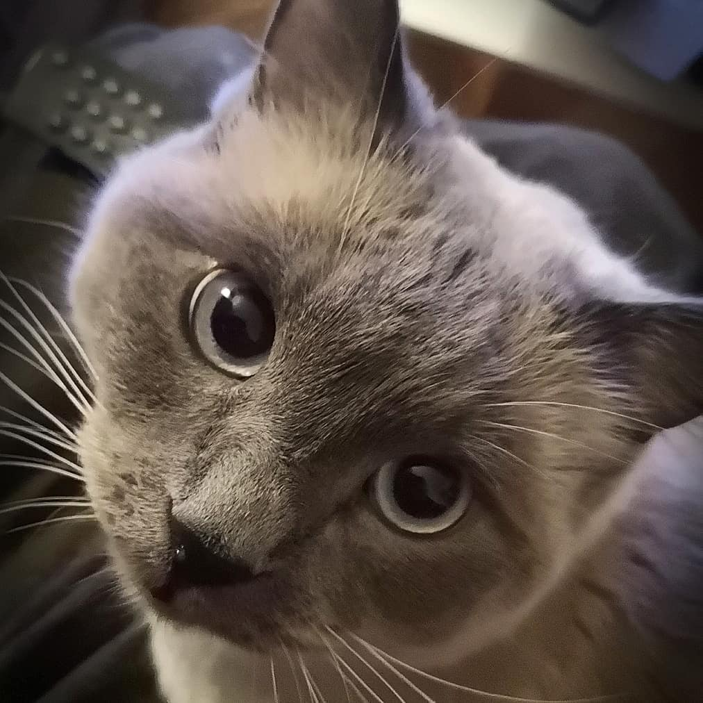
INFO DIRECT
Smartphones à l'école : ce qui change
Décret du 13 mars 2025
Depuis la rentrée 2025, l'usage récréatif du smartphone est interdit dans les écoles de la Fédération Wallonie-Bruxelles, de la maternelle à la fin du secondaire, récréations comprises. Les usages pédagogiques restent permis. Chaque école fixe elle-même les sanctions dans son règlement d'ordre intérieur.
@laverite.ado
ILS FOUILLENT VOS SACS 😡
150 € pour les parents ?!
C'est officiel et personne n'en parle ! Depuis la rentrée, les profs peuvent fouiller vos sacs à l'entrée. Ton téléphone est trouvé, même éteint ? Confisqué jusqu'en juin. Et tes parents reçoivent une amende de 150 euros. On traite les élèves comme des criminels. Partage avant que ça arrive dans ton école !
♥💬↗
Smartphones interdits à l'école. À gauche la version neutre (VRAIE), à droite la version qui joue sur les émotions (FAUSSE). Vrai : depuis la rentrée 2025, la Fédération Wallonie-Bruxelles interdit l'usage récréatif du téléphone à l'école (décret du 13 mars 2025). Faux dans la version émotion : fouilles de sacs, confiscation jusqu'en juin, amende de 150 € (le décret ne prévoit aucune amende). Sources : RTBF 2/10/2024 https://www.rtbf.be/article/des-la-prochaine-rentree-les-gsm-seront-interdits-a-l-ecole-jusqu-a-la-6e-secondaire-11442887 ; décret https://gallilex.cfwb.be/sites/default/files/textes-normatifs/2025-04/53356_0002.pdf Photos facultatives à déposer dans medias/images : emotion-1-neutre.jpg et emotion-1-emotion.jpg (sinon les posts s'affichent sans photo).
INFO DIRECT
Seine : la baignade de retour
Eau contrôlée chaque jour
Depuis le 5 juillet 2025, on peut se baigner dans la Seine à Paris, sur trois sites surveillés. Une première depuis un siècle. La qualité de l'eau est analysée chaque jour : après de fortes pluies, les sites ferment temporairement. Selon la mairie, près de 100 000 personnes s'y sont baignées cet été.
@paris.sans.filtre
Ils ne vous le diront pas
Hospitalisés après la baignade
On nous a dit que l'eau était propre. Mais depuis l'ouverture, des dizaines de baigneurs ont fini à l'hôpital : fièvre, vomissements, infections. Les résultats des analyses ne sont pas publiés. Moi, j'y ai emmené ma petite sœur. Avant de plonger, posez-vous la question : pourquoi on nous cache ça ?
♥💬↗
Baignade dans la Seine. À gauche la version neutre (VRAIE), à droite la version qui joue sur les émotions (FAUSSE). Vrai : depuis le 5 juillet 2025, trois sites de baignade surveillés dans la Seine à Paris, eau analysée chaque jour, près de 100 000 baigneurs selon la mairie. Faux dans la version émotion : des dizaines de baigneurs hospitalisés et des analyses cachées (aucune source, les résultats sont publics). Sources : DH/AFP 5/7/2025 https://www.dhnet.be/dernieres-depeches/2025/07/05/a-paris-la-saison-de-la-baignade-dans-la-seine-demarre-sous-etroite-surveillance-JF3D6MEULJGVJLPXZM5G3WMOLE/ ; AFP 27/8/2025 https://figaronautisme.meteoconsult.fr/actus-nautisme-flash/2025-08-27/80834-baignade-dans-la-seine-pres-de-100-000-baigneurs-annonce-hidalgo-qui-prolonge-l-ouverture Photos facultatives à déposer dans medias/images : emotion-2-neutre.jpg et emotion-2-emotion.jpg (sinon les posts s'affichent sans photo).
INFO DIRECT
Rhinocéros blanc du Nord : 3 individus
Programme BioRescue, Kenya
Au Kenya, le programme BioRescue annonce la naissance d'un premier rhinocéros blanc du Nord issu d'une fécondation in vitro, porté par une mère porteuse du Sud. La sous-espèce compte désormais trois individus. Les chercheurs prévoient de nouveaux transferts d'embryons dans les deux prochaines années.
@planete.fragile
Elles sont les deux dernières
Najin & Fatu
Elles s'appellent Najin et Fatu. Une mère et sa fille. Ce sont les deux dernières de leur espèce sur toute la planète. Le dernier mâle est mort en 2018. Aucune des deux ne peut avoir de petit. Jour et nuit, des gardes veillent sur elles. Quand elles partiront, il ne restera que des embryons dans un congélateur.
♥💬↗
Derniers rhinocéros blancs du Nord. À gauche la version neutre (FAUSSE), à droite la version qui joue sur les émotions (VRAIE). Ici c'est l'inverse. Vrai (version émotion) : Najin et Fatu, deux femelles, sont les deux derniers rhinocéros blancs du Nord (Ol Pejeta, Kenya) ; le dernier mâle, Sudan, est mort en 2018. Faux (version neutre) : aucune naissance par FIV n'a eu lieu (à revérifier avant le cours). Sources : RTBF/AFP 23/2/2025 https://www.rtbf.be/article/nous-les-sauverons-l-espoir-de-ressusciter-des-rhinoceros-techniquement-eteints-11506936 ; Ol Pejeta 22/4/2026 https://www.olpejetaconservancy.org/2026/04/22/new-embryo-boosts-survival-chances-for-the-northern-white-rhino/ Photos facultatives à déposer dans medias/images : emotion-3-neutre.jpg et emotion-3-emotion.jpg (sinon les posts s'affichent sans photo).
Le biais émotionnelEmotional bias
Une information qui déclenche une émotion forte capte davantage notre attention et notre mémoire, indépendamment de sa véracité.Information that triggers a strong emotion grabs more of our attention and memory, regardless of whether it's true.
Jouer sur la peur
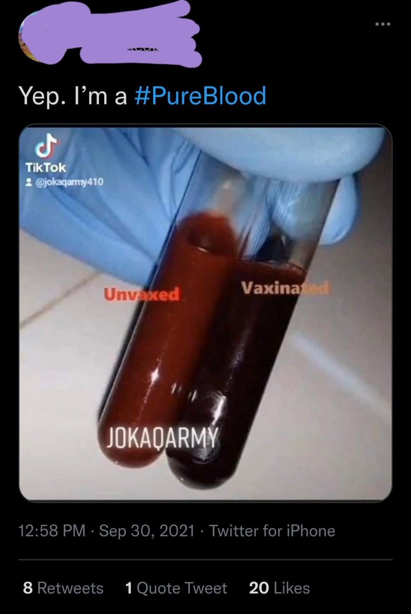
Petit exemple tiré de l’actualité
Imaginez…
Deux personnes, deux points de départ
Hervé
« Vladimir Poutine est un dictateur sanguinaire. »
Julie
« Les Américains menacent la Russie avec l’OTAN présent en Europe. »
Deux explications du même évènement
Explication 1
La Russie se défend de l’expansion de l’OTAN.
Explication 2
Poutine mène une guerre de conquête pour recréer le territoire de l’URSS.
Chacun choisira l’explication qui confirme ce qu’il pensait déjà.
Exemple servant à introduire le biais de confirmation : nous avons tendance à préférer les options qui confirment nos choix précédents.
À main levée…By a show of hands…
Un clic par main levée dans la salle, pour chaque question.One click per raised hand in the room, for each question.
« 89 % des accidents mortels sont provoqués par des hommes. »
Que vous dit ce chiffre, exactement ?
Les chiffresThe numbers
« 89 % des accidents mortels sont provoqués par des hommes. »"89% of fatal accidents are caused by men."
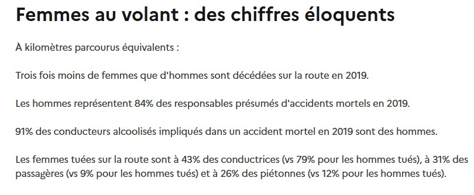
Source : interieur.gouv.fr (Femmes au volant, vie au tournant)Source: interieur.gouv.fr, French Ministry of the Interior road safety campaign (original in French)
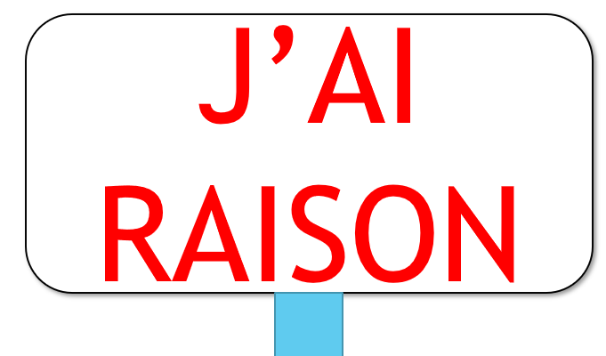
Le biais de confirmation !Confirmation bias!
La tendance à privilégier les informations qui confirment ce qu'on pense déjà, et à ignorer ou rejeter celles qui le contredisent.The tendency to favour information that confirms what we already believe, and to ignore or reject anything that contradicts it.
Fake News et réseaux sociauxFake news and social media
Quel est le but d'un réseau social ?What is the purpose of a social network?
LA THUNETHE MONEY
(Mais pas que)(But not only)
L'information en ligneInformation online
Les algorithmes nous montrent ce qu'on a déjà envie de voir (bulle de filtre)… mais nous confrontent aussi aux opinions opposées les plus radicales (polarisation).Algorithms show us what we already want to see (filter bubble)… but also expose us to the most extreme opposing views (polarisation).
À votre avis, quelle conclusion ?What do you think the conclusion is?
Le combo des deux nous enferme dans nos certitudes tout en nous montrant la pire caricature du camp d'en face, ce qui renforce encore la polarisation.The combination of the two locks us into our own certainties while showing us the worst caricature of the opposing side, which reinforces polarisation even further.
On fait quoi ?So what do we do?
1On ralentit : on laisse le système analytique prendre le relais.We slow down: we let the analytical system take over.
2On vérifie la source, avant de vérifier l'info elle-même.We check the source, before checking the information itself.
3On cherche si d'autres sources fiables racontent la même chose.We look for other reliable sources reporting the same thing.
4On se demande si on a bien tout le contexte.We ask ourselves whether we really have the full context.
Que faire ?What should we do?
ContexteContext
Si une information joue trop sur les émotions, redoublons de vigilance !If a piece of information plays too much on emotions, let's stay extra vigilant!
Étude de casCase study
« Le jus de citron pourrait lutter contre le sida »"Lemon juice could fight AIDS"
Une rumeur reprise par de nombreux sites, démontée par Futura-Sciences : aucune étude sérieuse ne soutient cette affirmation. Un titre accrocheur ne fait pas une preuve scientifique.A rumour picked up by many websites, debunked by Futura-Sciences: no serious study supports this claim. A catchy headline is not scientific proof.
Long termeLong term
Pourquoi est-ce que je crois ce que je crois ? À qui est-ce que je fais confiance ?Why do I believe what I believe? Who do I trust?
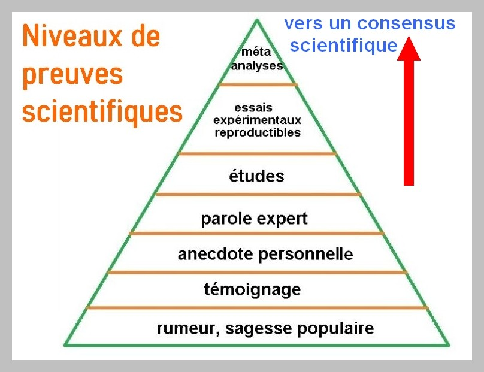
This diagram is in French.
Soyons modestes !Let's stay humble!
Cours 3
Désinformation : comment manipuler l'opinion
Qu’est-ce qu’une Fake News ?Reminder: what is fake news?
▸ Fake News : information fausse.▸ Fake news: false information.
▸ Information contraire au réel et aux connaissances que nous en avons.▸ Information that contradicts reality and what we know about it.
▸ Généralement diffusée sur les médias et les réseaux sociaux.▸ Usually spread through the media and social networks.
▸ Généralement dans le but de désinformer.▸ Usually with the aim of misleading.
VraiTrue
FauxFalse
1) Quelles sont les questions à se poser ?1) What questions should we ask?
Quels sont les critères pour valider l'information ?What criteria help us validate information?
11
Fiabilité de la sourceReliability of the source
22
Fiabilité de l'interlocuteurReliability of the speaker
33
Niveau de preuvesLevel of evidence
44
Plusieurs sources fiables en parlentSeveral reliable sources report it
55
Crédibilité de l'informationCredibility of the information
66
Commentaires et critiques de l'informationComments and criticism of the information
Mais attention…But be careful…
Critère 1Criterion 1
Fiabilité de la sourceReliability of the source
Critère 2Criterion 2
Fiabilité de l'interlocuteurReliability of the speaker
Critère 3Criterion 3
Niveau de preuvesLevel of evidence
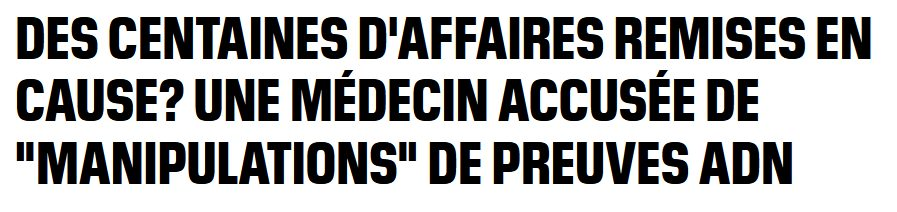
Beaucoup de sources en parlentMany sources report it
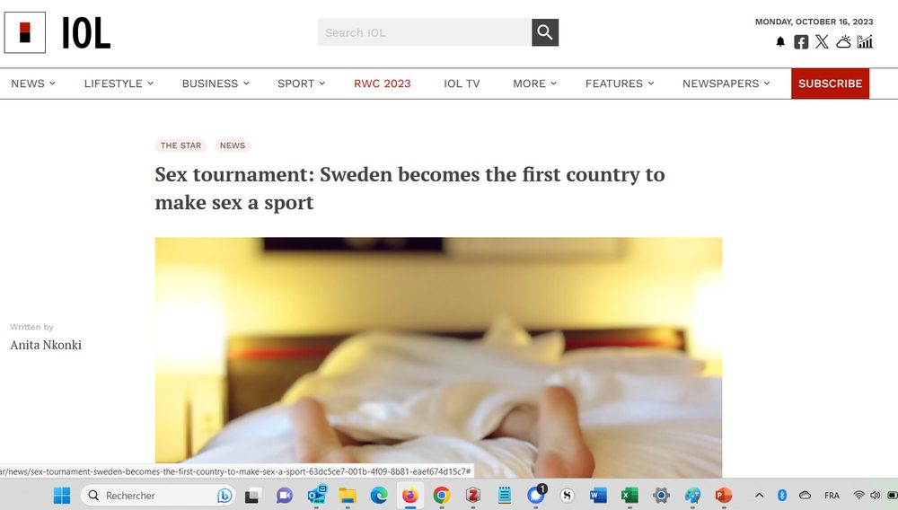
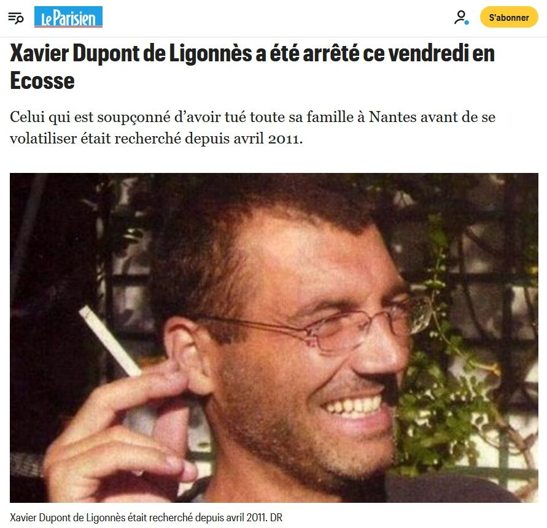
A real case followed by multiple reliable outlets (Le Parisien, BFMTV…)
Crédibilité de l'informationCredibility of the information
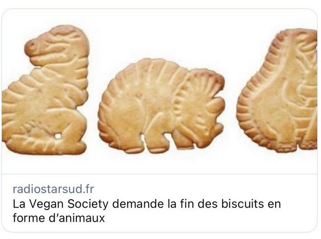
Quels sont les retours critiques ?What is the critical feedback?
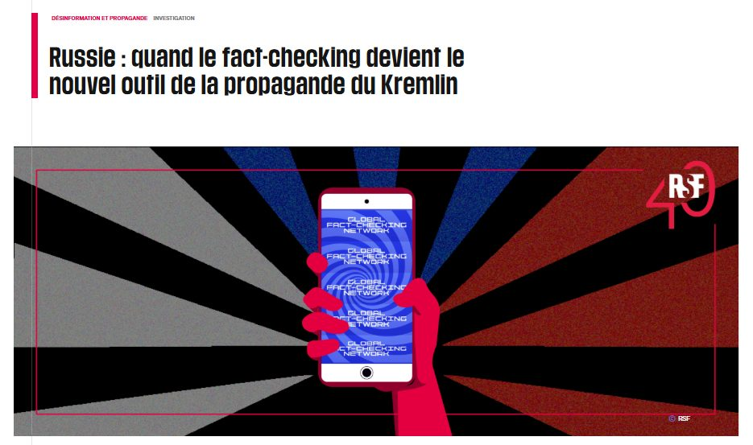
Limite du conceptA limit of the concept
▸ Inclut les canulars (Gorafi)▸ Includes hoaxes (Le Gorafi)
Différentes Fake NewsDifferent kinds of fake news
▸ Mésinformation▸ Misinformation
▹ Une infox que l’on partage mais que l’on croit vraie.▹ Fake news we share while believing it is true.
▸ Désinformation▸ Disinformation
▹ Une infox que l’on partage et que l’on sait fausse.▹ Fake news we share while knowing it is false.
Informations fallacieuses (misleading news)Misleading information (misleading news)
▸ Sont beaucoup moins facilement identifiables qu’une “Fake News” pure et dure.▸ Are much harder to identify than outright “fake news”.
▸ Sont beaucoup plus partagées par les médias.▸ Are shared far more widely by the media.
Limite du conceptA limit of the concept
▸ Inclut les canulars (Gorafi)▸ Includes hoaxes (Le Gorafi)
▸ Distinction floue entre la Fake news volontaire (désinformation) et involontaire (mésinformation).▸ A blurred line between deliberate fake news (disinformation) and unintentional fake news (misinformation).
▸ Néglige tout le continuum possible de désinformation (« misleading news »).▸ Ignores the whole possible continuum of disinformation (“misleading news”).
Fake NewsFake news
Véritable informationGenuine information
ContinuumContinuum
Conclusion · partie 1Conclusion · part 1
1) Aucune source n'est 100 % fiable.1) No source is 100% reliable.
2) La « Fake News » est un concept flou.2) "Fake news" is a blurry concept.
3) Elle dépend toujours du contexte.3) It always depends on context.
ConclusionConclusion
▸ 1) Aucune source n’est à 100% fiable▸ 1) No source is 100% reliable
▸ 2) La « Fake News » est un concept flou.▸ 2) “Fake news” is a blurry concept.
▸ 3) Elle dépend du contexte.▸ 3) It depends on the context.
Désinformer SANS Fake NewsMisleading WITHOUT fake news
Le biais de cadrageFraming bias
PPatriote Éveillé@eveil_patriote · 15 mars···
"Dans le métro, ce migrant refuse que des blancs rentrent dans le même wagon que lui !! C’est bizarre, on nous a toujours dit que le racisme anti-blancs n’existait pas !""On the subway, this migrant refuses to let white people into the same carriage as him!! Weird, we were always told anti-white racism didn’t exist!"
💬🔁♡📊
FLe Fil Métro@lefilmetro · 12 mars···
À Lille, un homme frappait sa femme dans le métro. Un passager, témoin de la scène, lui a demandé à plusieurs reprises de cesser. À l’arrêt suivant, le passager a pris l’initiative de faire sortir l’homme du train pour protéger la femme.In Lille, a man was hitting his wife on the subway. A passenger who witnessed the scene repeatedly asked him to stop. At the next stop, the passenger took it upon himself to get the man off the train to protect the woman.
💬🔁♡📊
IInfo Sans Filtre@infosansfiltre · 16 mars···
C'est arrivé dans un métro ce matin. Un homme migrant a jeté un couple de personnes âgées qui étaient entrées dans le même wagon que lui. Il ne supportait pas la présence de personnes blanches dans la même zone que lui. Ce genre de phénomène se répète de plus en plus dans le métro. Les témoignages affluent.It happened on the metro this morning. A migrant man threw out an elderly couple who had entered the same carriage as him. He couldn't stand the presence of white people in the same area as him. This kind of thing is happening more and more on the metro. Testimonies are pouring in.
💬🔁♡📊
JJustice pour elles@justicepourelles · 13 mars···
Bien fait pour ce vieux qui frappait sa femme ! Le jeune homme lui a adressé une bonne leçon en le balançant sur le quai ! Malheureusement, il a attrapé sa femme avec lui, mais c'est comme ça qu'on traite les agresseurs de femmes !Serves that old man right for hitting his wife! The young man taught him a good lesson by throwing him onto the platform! Unfortunately he dragged his wife with him, but that's how you deal with men who attack women!
💬🔁♡📊
En haut à gauche : faux, émotionnel et raciste. En haut à droite : vrai, factuel (Lille). En bas à gauche : tout aussi faux et raciste, mais sur un ton factuel, sans émotion. En bas à droite : joue sur l'émotion, mais raconte le fait vrai. Les quatre comptes sont inventés. Dates : Le Fil Métro le 12 mars, Justice pour elles le 13, Patriote Éveillé le 15 (trois jours après), Info Sans Filtre le 16.
Un tweet, deux versions du même sondageOne tweet, two versions of the same poll
Selon une étude NielsenIQ, 64% des Français prévoient d'allouer le même budget à Noël que l'an passé.
Consommation. Malgré l'inflation, les Français veulent préserver leur budg...
Il est possible de désinformer SANS fake .It is possible to mislead WITHOUT fake news, but by CITING fake news.
Je suis critique du vaccin, mais je suis une chaîne d’information respectable. Quelle information je vais choisir ?I am critical of the vaccine, but I am a respectable news channel. Which information will I choose?
Un sondage sur le vaccin contre la COVID révèle que plus de la moitié des adultes sont susceptibles de ne pas se faire vaccinerVraiTrue
Le vaccin vous rend magnétiqueFauxFalse
Les vaccins ont sauvé au moins 154 millions de vies en 50 ansVraiTrue
Les taux de vaccination contre la COVID et la grippe diminuent chez les professionnels de santé américainsVraiTrue
Le vaccin contre la COVID modifie votre ADNFauxFalse
Le vaccin COVID qui vient d’être approuvé devrait être évité par les FloridiensVraiTrue
La variole, éradiquée grâce à la vaccinationVraiTrue
Le vaccin vous tue en deux joursFauxFalse
La nouvelle promotion du vaccin COVID est « anti-humaine », déclare le chirurgien général de FlorideVraiTrue
Vaccins contre la COVID : au moins 1,4 million de vies sauvées en EuropeVraiTrue
Encore un autre vaccin COVID ? Biden veut financer un nouveau rappelVraiTrue
Le vaccin contient une puce électroniqueFauxFalse
Devriez-vous recevoir les vaccins contre la COVID et la grippe en même temps ?VraiTrue
Le vaccin contre le papillomavirus fait chuter les cancers du col de l’utérusVraiTrue
Vaccins contre la COVID mis à jour : la FDA annonce une autorisation d’urgenceVraiTrue
Quel bras devriez-vous utiliser pour le vaccin COVID et celui de la grippe ?VraiTrue
Seize titres mélangés : les articles de Fox News des deux diapos précédentes (vrais), des informations vraies et positives sur les vaccins, et des fake news négatives. Le jeu : ne choisir que les informations vraies mais négatives. Un clic sur une carte l’entoure en jaune, un second clic l’enlève. Vrai et positif : 154 millions de vies sauvées en 50 ans (OMS, The Lancet, 2024) ; variole éradiquée (OMS, 1980) ; 1,4 million de vies sauvées en Europe par les vaccins COVID (OMS Europe, 2024) ; papillomavirus et cancers du col (Écosse, 2024).
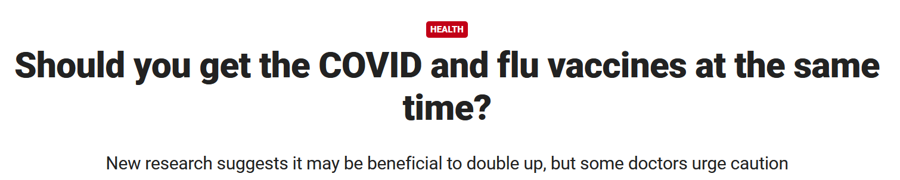
« Devriez-vous recevoir les vaccins contre la COVID et la grippe en même temps ? » De nouvelles recherches suggèrent qu’il pourrait être bénéfique de les faire ensemble, mais certains médecins appellent à la prudence.“Should you get the COVID and flu vaccines at the same time?” New research suggests it may be beneficial to double up, but some doctors urge caution.
Google
FoxNewsvaccinsFoxNewsvaccines
Fox Newshttps://www.foxnews.com › health
Devriez-vous recevoir les vaccins contre la COVID et la grippe en même temps ?Should you get the COVID and flu vaccines at the same time?
Il y a 2 jours — De nouvelles recherches suggèrent qu’il pourrait être bénéfique de les faire ensemble, mais certains médecins appellent à la prudence. Par Melissa Rudy, Fox News. Publié le 16 novembre 2023 à 6h : ...2 days ago — New research suggests it may be beneficial to double up, but some doctors urge caution. By Melissa Rudy Fox News. Published November 16, 2023 6: ...
Fox Newshttps://www.foxnews.com › health
Les taux de vaccination contre la COVID et la grippe diminuent chez les professionnels de santé américains ...COVID and flu vaccine rates are declining for US health ...
De moins en moins de travailleurs de la santé aux États-Unis se tiennent à jour concernant leurs vaccinations contre la COVID-19 et la grippe, selon deux rapports distincts publiés cette semaine ...Fewer U.S. health care workers are keeping up to date on their COVID-19 and flu vaccinations, according to two separate reports this week ...
Fox Newshttps://www.foxnews.com › health
Un sondage sur le vaccin contre la COVID révèle que plus de la moitié des adultes sont susceptibles de ne pas se faire vacciner ...COVID vaccine poll finds more than half of adults are likely ...
1er oct. 2023 — Parmi les adultes américains, 52 % déclarent qu’ils ne se feront « probablement » ou « certainement » pas administrer le nouveau vaccin contre la COVID-19, selon le sondage KFF COVID-19 Vaccine Monitor.Oct 1, 2023 — Among U.S. adults, 52% will “probably” or “definitely” not get the new COVID-19 vaccine, according to the KFF COVID-19 Vaccine Monitor poll.
Fox Newshttps://www.foxnews.com › health
Vaccins contre la COVID mis à jour : la FDA annonce une autorisation d’urgence ...Updated COVID vaccines: FDA announces emergency ...
11 sept. 2023 — Selon l’annonce de lundi, « les vaccins bivalents Moderna et Pfizer-BioNTech contre la COVID-19 ne sont plus autorisés pour une utilisation aux États-Unis, » ...Sep 11, 2023 — With Monday’s announcement, “the bivalent Moderna and Pfizer-BioNTech COVID-19 vaccines are no longer authorized for use in the United States,” ...
Google
Fox News vaccinsFox News vaccines
Fox Newshttps://www.foxnews.com › health
Le vaccin COVID qui vient d’être approuvé devrait être évité par les Floridiens…COVID vaccine just approved should be skipped by Florida ...
17 sept. 2023 — Les « Floridiens en bonne santé » ne devraient pas être des « cobayes », déclare le gouverneur, alors que la FDA et le CDC approuvent et recommandent un nouveau vaccin. Par Melissa Rudy, Fox News.Sep 17, 2023 — ‘Healthy Floridians’ should not be ‘guinea pigs,’ says governor, as FDA and CDC approve, recommend new vax. By Melissa Rudy Fox News.
Fox Newshttps://www.foxnews.com › health
La nouvelle promotion du vaccin COVID est « anti-humaine », déclare le chirurgien général de Floride…New COVID vaccine push is ‘anti-human,’ says Florida ...
3 oct. 2023 — La nouvelle promotion du vaccin COVID est « anti-humaine », affirme le chirurgien général de Floride : « Problème majeur de sécurité ». Le Dr Joseph Ladapo a déclaré à Fox News Digital qu’il…Oct 3, 2023 — New COVID vaccine push is ‘anti-human,’ says Florida surgeon general: ‘Major safety concern’. Dr. Joseph Ladapo told Fox News Digital he would ...
Fox Newshttps://www.foxnews.com › health
Encore un autre vaccin COVID ? Alors que Biden réclame un nouveau…Yet another COVID vaccine? As Biden calls for new ...
29 août 2023 — À la suite des déclarations du président Biden vendredi indiquant qu’il prévoit de demander un financement pour un nouveau vaccin COVID amid rising cases, des médecins réagissent…Aug 29, 2023 — Following President Biden’s Friday remarks that he plans to request funding for a new COVID vaccine amid rising cases, doctors sound off on ...
Fox Newshttps://www.foxnews.com › health
Quel bras devriez-vous utiliser pour le vaccin COVID et…Which arm should you use for the COVID vaccine and ...
Cela compte vraiment, suggère une étude. Voici pourquoi un choix pourrait déclencher une « réponse immunitaire plus forte » que l’autre. Par Melissa Rudy, Fox News.It really does matter, study suggests. Here’s why one choice may trigger a ‘stronger immune response’ than the other. By Melissa Rudy Fox News.
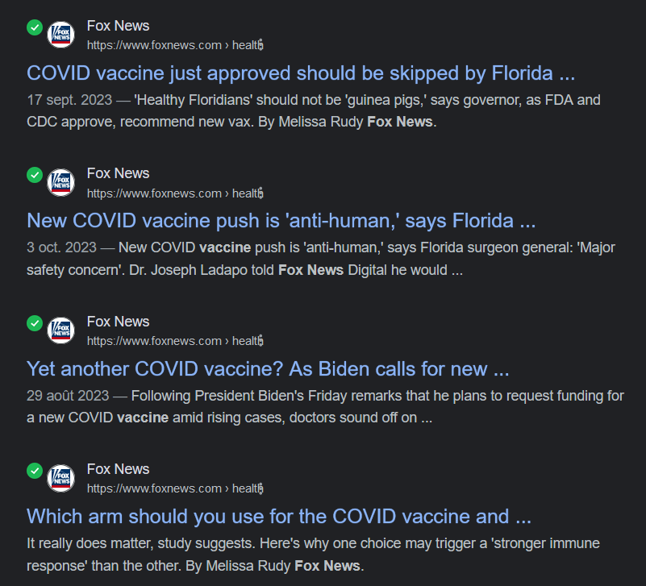
Chaque titre pris isolément est défendable. C’est l’empilement qui désinforme.
Comment convaincre l’opinion ?How to convince public opinion?
Comment manipuler l’opinion ?How to manipulate public opinion?
??
Rajouter des rougesAdd more reds
??
Faire fuir les bleusDrive the blues away
??
Décourager les bleusDiscourage the blues
??
Divertir les bleusDistract the blues
50 bleus, 50 rouges. D’abord « Comment convaincre l’opinion ? » : le curseur en bas. Vers la droite, des rouges se retournent et deviennent bleus (les bleus les ont convaincus) ; vers la gauche, des bleus deviennent rouges. Jusqu’à 20 de chaque côté. C’est la démocratie.
Clic sur le titre : « convaincre » devient « manipuler », le curseur disparaît et les quatre cartes apparaissent. « Imaginons que je suis des rouges : comment faire pour qu’au final, sur les réseaux sociaux, il y ait plus de rouges que de bleus ? » Chaque carte se retourne au clic et lance son effet ; un second clic l’annule. Haut gauche, « Rajouter des rouges » : +20 rouges. Bas gauche, « Faire fuir les bleus » : 18 bleus disparaissent. Haut droite, « Décourager les bleus » : 12 bleus deviennent gris, ils arrêtent de parler du sujet. Bas droite, « Divertir les bleus » : 12 bleus deviennent verts, ils parlent d’un autre sujet. Un nouveau clic sur le titre revient à « convaincre ».
Les autres manières de désinformerOther ways to mislead
3 - Les autres manières de désinformer3 - Other ways to mislead
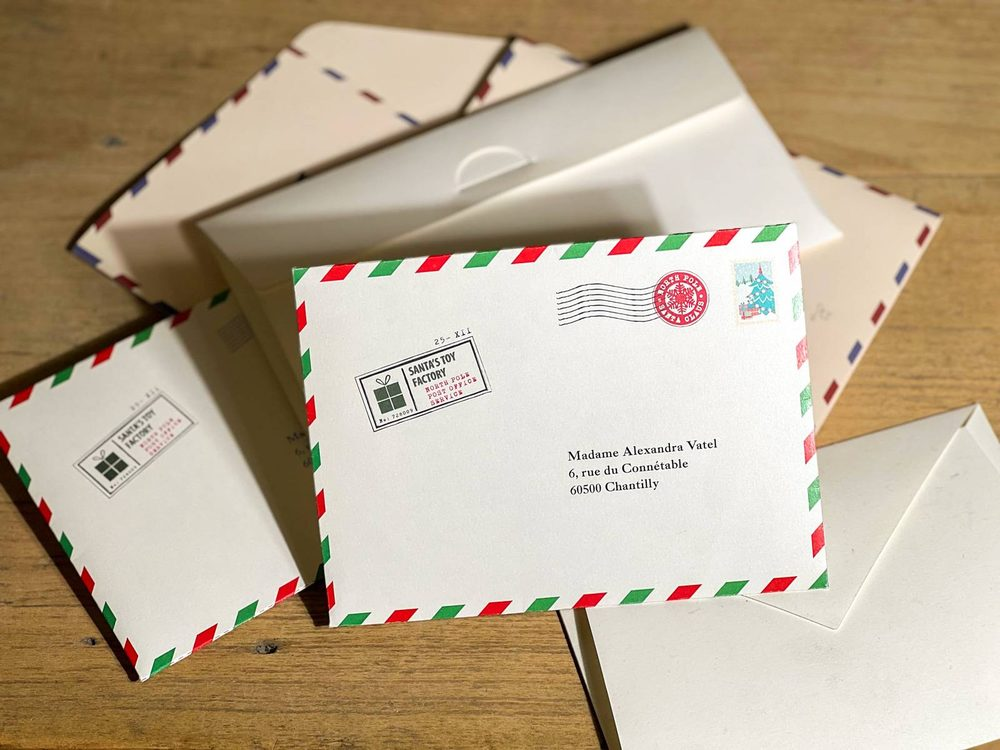
Lloyd Bentsen[2] in 1985 sénateur Texan
L’AstroturfingAstroturfing
▸ L’astroturfing est une technique consistant à simuler un mouvement spontané ou populaire à des fins politiques ou économiques dans le but d’influencer l’opinion publique.▸ Astroturfing is a technique that fakes a spontaneous or grassroots movement for political or economic ends, in order to influence public opinion.
C'est le sénateur du Texas Lloyd Bentsen qui utilise le terme astroturfing pour la première fois en 1986. Il raconte que de nombreux courriers qui lui sont prétendument envoyés par des citoyens sont en réalité une campagne de lobbying d'une compagnie d'assurance5.
L'origine du terme astroturfing fait référence à la pelouse artificielle de marque AstroTurf (en) utilisée dans les stades. C'est un jeu de mots sur l'expression « grassroots movement » en anglais américain. Grassroots, qui signifie littéralement « racine de l'herbe », exprime l'idée d'authenticité, d'ancrage dans le peuple. Ainsi la référence à une pelouse synthétique dénonce par analogie l'artificialité de ces pseudo mouvements citoyens.
C’est du militantisme mensongé.
Comment manipuler l’opinion ?How to manipulate public opinion?
Rajouter des rouges
Rajouter des rouges
Faire fuir les bleus
Faire fuir les bleus
Décourager les bleus
Décourager les bleus
Divertir les bleus
Divertir les bleus
Les quatre leviers, textes visibles : on se demande lequel est à l’œuvre dans la situation qu’on vient de voir. Un clic sur une carte lance son effet sur les ronds, un second l’annule. Cette diapo revient plus loin (reprises) : ne modifier que celle-ci, les reprises suivent.
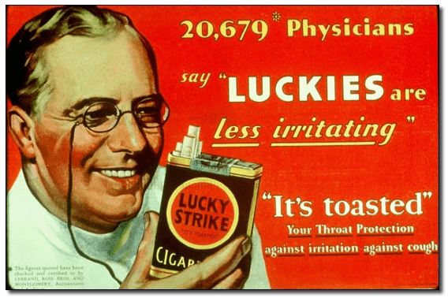
La fabrique du douteThe manufacture of doubt
Une technique à l’origine employée par les industriels pour noyer le poisson sur leurs activités mais pas seulement… Elle plaît beaucoup en politique également.A technique originally used by industry to muddy the waters about its activities, but not only… It is also very popular in politics.
Le tabac comme habitude cool :
Connaissance des risques du tabac : caché. Négation.
Lobbying ET soft power auprès des jeunes.
La fabrique du douteThe manufacture of doubt
InvasionInvasion
Libération du peupleLiberation of the people
Attaque d’un pays souverainAttack on a sovereign country
Historiquement nous sommes le même paysHistorically we are the same country
Premiers à attaquerFirst to attack
Légitime défenseSelf-defence
Contre narratifCounter-narrative
Russia: Denial of human rights abuses.
https://www.politico.eu/article/russia-ukraine-disinformation-nato-united-states-special-forces-winter-olympics-moscow-kremlin-kyiv/
NATO will supposedly attack Russia at the upcoming Winter Olympics.
https://news-front.info/2022/01/14/ukraina-gotovit-vooruzhennuyu-provokatsiyu-v-donbasse-vo-vremya-olimpiady-dmitriy-solonnikov/
Debate around RT, Russia Today.
La Mute NewsMute News
Ne PAS parler de certaines informations, ou PEU parler de certaines informations.NOT talking about certain information, or talking about it only a LITTLE.
La Mute NewsMute News
Près de 18 000civils tuésAlmost 18,000civilians killed
Plus de 600 000morts au totalOver 600,000deaths in total
Plus de 38 000civils tuésOver 38,000civilians killed
Plus de 74 000morts au totalOver 74,000deaths in total
Plus de 18 000civils tuésOver 18,000civilians killed
Au moins 150 000morts au totalAt least 150,000deaths in total
Bilans au 20 novembre 2026. 1er clic : civils tués ; 2e clic : morts au total (civils et combattants). Ukraine : près de 18 000 civils tués de février 2022 à fin octobre 2026, décompte vérifié de l'ONU (HRMMU), minimum, sous-estimé dans les zones occupées https://news.un.org/en/story/2026/11/1168828 ; au total plus de 600 000 morts : estimations d'environ 500 000 militaires russes et 100 000 à 150 000 militaires ukrainiens tués (CSIS, Cavoli), invérifiables https://www.russiamatters.org/news/russia-ukraine-war-report-card/russia-ukraine-war-report-card-oct-14-2026 Gaza : aucun décompte officiel des civils ; 38 682 enfants (21 976), femmes (11 301) et personnes âgées (5 405) identifiés par le ministère de la Santé de Gaza, repris par l'ONU (OCHA, 4 nov. 2026), donc un minimum : les hommes civils ne sont pas comptés https://www.ochaopt.org/sites/default/files/Gaza_Reported_Impact_Snapshot_04_November_2026.pdf ; au total 74 645 morts au 10/11/2026 selon le ministère de la Santé (civils et combattants, sans les disparus ni les morts indirects) https://qna.org.qa/en/News-Area/News/2026-11/10/gaza-death-toll-from-occupations-offensive-rises-to-74645-health-officials ; l'étude du Lancet (fév. 2026) estime 75 200 morts violentes dès janvier 2025, dont 56 % de femmes, enfants et personnes âgées. Soudan : 18 766 civils tués recensés par ACLED de janvier 2024 à juin 2026, sans l'année 2023 (10 000 à 15 000 morts rien qu'à El Geneina selon l'ONU), donc un minimum https://www.gov.uk/government/publications/sudan-country-policy-and-information-notes/country-policy-and-information-note-security-situation-sudan-july-2026-accessible ; au total : ACLED recense environ 59 000 morts violentes (civils et combattants), mais les estimations vont de 150 000 à 400 000 morts en comptant la faim et les maladies https://www.csis.org/analysis/sudan-war-10-charts Pour l'oral : en civils tués, le Soudan paraît au niveau de l'Ukraine, mais c'est le plus meurtrier pour les civils si on compte la faim et les maladies. En comptant les soldats, l'Ukraine est le conflit en cours le plus meurtrier.
Mise à l’agendaAgenda-setting
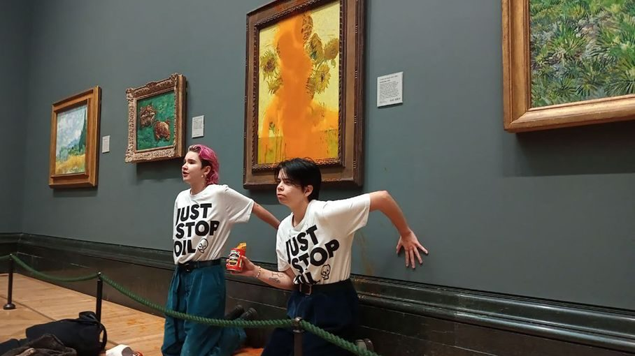
L’usage politique de la désinformationThe political use of disinformation
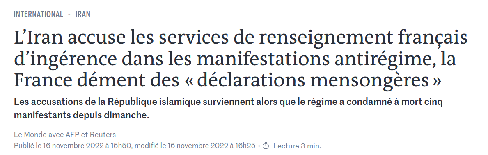
Laquelle est générée par IA ?Which one is AI-generated?
AVraie photoReal photoBGénérée par IAAI-generated
Laquelle est générée par IA ?Which one is AI-generated?
AGénérée par IAAI-generatedBGénérée par IAAI-generated
Et en vidéo ? « Will Smith mange des spaghettis »And on video? “Will Smith eating spaghetti”
20232023Générée par IAAI-generatedAujourd’huiTodayVraie vidéoReal video
La vidéo de la descente d’avion à Hanoï (mai 2025) : Brigitte Macron repousse le visage d’Emmanuel Macron. Avant de reconnaître la scène, l’entourage du président a d’abord parlé d’une vidéo manipulée. Transition vers le dividende du menteur.
Le dividende du menteurThe liar’s dividend
Le dividende du menteur : puisque tout le monde sait qu’on peut fabriquer des photos et des vidéos en IA, on peut faire passer une vraie information pour un faux (« c’est un montage, c’est de l’IA ») et désavouer ainsi de vraies informations. Exemple : la vidéo de l’avion qu’on vient de voir.
Les croix de DavidThe Stars of David
31 oct. 202331 Oct 2023
Nov. 2023Nov 2023
23 fév. 202423 Feb 2024
Le Parisien · 31 oct. 2023« Effroi », « honte » : à Paris, des étoiles de David taguées sur les murs d’habitations et de commerces
La Dépêche · 31 oct. 2023Antisémitisme : à Paris, près de 60 étoiles de David taguées dans les rues du XIVe arrondissement
Le Monde · 31 oct. 2023Des étoiles de David taguées en Ile-de-France : enquête ouverte, Elisabeth Borne dénonce des « agissements ignobles »
The Times of Israel · 31 oct. 2023À Paris, des étoiles de David taguées sur des immeubles
actu.fr · 1er nov. 2023Étoiles de David taguées à Paris : « insulter le peuple juif ou en revendiquer l’appartenance ? »
BFMTV · 9 nov. 2023Le commanditaire présumé des tags d’étoiles de David affirme qu’il voulait « soutenir les juifs d’Europe »
La Tribune (Reuters) · 9 nov. 2023Etoiles de David taguées à Paris : la France condamne une « ingérence numérique » russe
actu.fr · 10 nov. 2023« Soutenir les juifs » : les étranges explications du commanditaire des tags d’étoiles de David
Le Figaro (avec AFP) · 23 fév. 2024Étoiles de David taguées à Paris : l’opération était pilotée par le FSB russe
RMC · 23 fév. 2024Tags d’étoiles de David : l’opération était pilotée par le FSB, les services secrets russes
Le Parisien · 23 fév. 2024Étoiles de David taguées en région parisienne : l’opération était pilotée par les services de sécurité russes
Ouest-France · 23 fév. 2024Étoiles de David taguées à Paris : une opération pilotée par le FSB, service de renseignement russe
Chronologie horizontale : à chaque flèche, le curseur avance d'une date et les articles de cette période montent. Titres relevés sur les sites le 17/11/2026.
31 oct. 2023 : Le Parisien https://www.leparisien.fr/paris-75/effroi-honte-a-paris-des-etoiles-de-david-taguees-sur-les-murs-dhabitations-et-de-commerces-31-10-2023-ARHLHRVAAFFR5LJFC7NCT264JA.php ; La Dépêche https://www.ladepeche.fr/2023/10/31/antisemitisme-a-paris-pres-de-60-etoiles-de-david-taguees-dans-les-rues-du-xive-arrondissement-11553202.php ; Le Monde https://www.lemonde.fr/societe/article/2023/10/31/le-parquet-de-paris-ouvre-une-enquete-apres-la-decouverte-d-etoiles-de-david-taguees-sur-des-immeubles_6197523_3224.html ; Times of Israel https://fr.timesofisrael.com/france-des-etoiles-de-david-taguees-a-paris-sur-des-immeubles/
Novembre 2023 : actu.fr https://actu.fr/ile-de-france/paris_75056/etoiles-de-david-taguees-a-paris-insulter-le-peuple-juif-ou-en-revendiquer-l-appartenance_60280856.html ; BFMTV https://www.bfmtv.com/police-justice/le-commanditaire-presume-des-tags-d-etoiles-de-david-affirme-qu-il-voulait-soutenir-les-juifs-d-europe_AV-202311090781.html ; La Tribune/Reuters https://www.latribune.fr/depeches/reuters/KBN32420I/etoiles-de-david-taguees-a-paris-la-france-condamne-une-ingerence-numerique-russe.html ; actu.fr https://actu.fr/ile-de-france/paris_75056/soutenir-les-juifs-les-etranges-explications-du-commanditaire-des-tags-d-etoiles-de-david_60316872.html . Le 9 novembre, le Quai d'Orsay parle déjà d'« ingérence numérique russe » (bots du réseau RRN) : la carte La Tribune le montre ; le FSB n'est nommé qu'en février.
23 fév. 2024 (Le Monde révèle la note de la DGSI le 22 au soir, reprise par l'AFP le 23) : Le Figaro/AFP ; RMC https://rmc.bfmtv.com/actualites/police-justice/faits-divers/tags-d-etoiles-de-david-l-operation-etait-pilotee-par-le-fsb-les-services-secrets-russes_AN-202402230625.html ; Le Parisien https://www.leparisien.fr/faits-divers/etoiles-de-david-taguees-en-region-parisienne-loperation-etait-pilotee-par-les-services-de-securite-russes-23-02-2024-R566XVXPYBCJPP2NBPZBPE4QGA.php ; Ouest-France https://www.ouest-france.fr/societe/antisemitisme/etoiles-de-david-taguees-a-paris-une-operation-pilotee-par-le-fsb-service-de-renseignement-russe-a457c278-d265-11ee-b1bc-6aaac57ff91a
Couverture médiatique (INA, La Revue des médias, 12/05/2025) : 255 mentions sur les chaînes info le seul 31 octobre, 480 en deux jours ; entre le 2 et le 15 novembre, 484 en tout. https://larevuedesmedias.ina.fr/etoiles-david-bleues-mains-rouges-medias-desinformation-manipulation-russie-ingerence
Graphique de l'INA, La Revue des médias, 12 mai 2025 : https://larevuedesmedias.ina.fr/etoiles-david-bleues-mains-rouges-medias-desinformation-manipulation-russie-ingerence
255 mentions sur les chaînes d'info le seul 31 octobre ; 480 mentions en deux jours (31 oct. et 1er nov.) ; entre le 2 et le 15 novembre, 484 mentions en tout, alors que le commanditaire, puis l'ingérence russe (9 novembre) sont révélés. Les JT du soir arrêtent d'en parler dès le 1er novembre (sauf France 2 le 8). Le graphique s'arrête au 15 novembre : la révélation du FSB (23 février 2024) n'y figure pas.
9 sept. 20259 Sep 2025
10 sept. 202510 Sep 2025
Fin sept. 2025Late Sep 2025
20262026
franceinfo · 9 sept. 2025Au moins neuf têtes de cochon ont été découvertes devant des mosquées en Ile-de-France
BFMTV · 9 sept. 2025« Une lâcheté insondable » : Bruno Retailleau fait part de son « indignation » après la découverte de têtes de cochon devant des mosquées
20 Minutes · 9 sept. 2025« L’islamophobie se déchaîne » à cause de Retailleau, accuse Mélenchon
Le Monde · 9 sept. 2025Des têtes de cochon devant plusieurs mosquées, « une nouvelle et triste étape dans la montée de la haine antimusulmane »
BFMTV · 10 sept. 2025Têtes de porc décapitées devant des mosquées : ingérence russe ou action coordonnée de l’ultradroite ?
RTL · 10 sept. 2025Têtes de cochon devant les mosquées : l’ingérence étrangère confirmée, plusieurs suspects en fuite
Le Monde · 27 sept. 2025Têtes de cochon devant des mosquées : l’enquête privilégie la piste du renseignement militaire russe
TF1 Info · 29 sept. 2025Têtes de cochon devant des mosquées d’Ile-de-France : 11 arrestations en Serbie
La Croix · 6 mars 2026Têtes de cochons devant des mosquées en France : trois Serbes condamnés dans leur pays
BFMTV · 20 mars 2026Têtes de cochon devant des mosquées, peinture verte sur des lieux juifs : comment les services secrets russes ont voulu déstabiliser la France
France 24 · 26 mai 2026Têtes de cochon, projets d’ingérence : ce que révèlent des documents sur les opérations russes en France
D'abord la photo ; à chaque flèche, le curseur avance d'une date et les articles de cette période montent. Titres relevés sur les sites le 17/11/2026.
9 sept. 2025 : franceinfo https://www.franceinfo.fr/france/ile-de-france/plusieurs-tetes-de-cochon-decouvertes-devant-des-mosquees-a-paris-et-en-banlieue-bruno-retailleau-denonce-un-acte-d-une-lachete-insondable_7482145.html ; BFMTV https://www.bfmtv.com/police-justice/une-lachete-insondable-bruno-retailleau-fait-part-de-son-indignation-apres-la-decouverte-de-tetes-de-cochon-devant-des-mosquees_AD-202509090508.html ; 20 Minutes https://www.20minutes.fr/politique/4172041-20250909-islamophobie-dechaine-cause-retailleau-accuse-melenchon-apres-decouverte-tetes-cochon ; Le Monde https://www.lemonde.fr/societe/article/2025/09/09/des-tetes-de-cochon-devant-plusieurs-mosquees-une-nouvelle-et-triste-etape-dans-la-montee-de-la-haine-antimusulmane_6640168_3224.html
10 sept. 2025 (le parquet annonce que les têtes ont été déposées par des étrangers repartis à l'étranger) : BFMTV https://www.bfmtv.com/police-justice/tetes-de-porc-decapitees-devant-des-mosquees-ingerence-russe-ou-action-coordonnee-de-l-ultradroite_AV-202509100390.html ; RTL https://www.rtl.fr/actu/justice-faits-divers/tetes-de-cochon-devant-les-mosquees-l-ingerence-etrangere-confirmee-plusieurs-suspects-en-fuite-7900539897
Fin sept. 2025 : Le Monde https://www.lemonde.fr/societe/article/2025/09/27/tetes-de-cochon-devant-des-mosquees-l-enquete-privilegie-la-piste-du-renseignement-militaire-russe_6643121_3224.html ; TF1 Info https://www.tf1info.fr/justice-faits-divers/tetes-de-cochon-devant-des-mosquees-d-ile-de-france-11-arrestations-en-serbie-annonce-l-interieur-2397545.html
2026 : La Croix https://www.la-croix.com/international/tetes-de-cochons-devant-des-mosquees-en-france-trois-serbes-condamnes-dans-leur-pays-20260306 ; BFMTV https://www.bfmtv.com/police-justice/info-bfmtv-tetes-de-cochon-devant-des-mosquees-peinture-verte-sur-des-lieux-juifs-comment-les-services-secrets-russes-ont-voulu-destabiliser-la-france_AN-202603200783.html ; France 24 https://www.france24.com/fr/france/20260526-t%C3%AAtes-de-cochon-projets-d-ing%C3%A9rence-ce-que-r%C3%A9v%C3%A8lent-des-documents-sur-les-op%C3%A9rations-russes-en-france . Les documents de la Social Design Agency (« Report on Operation Pig's Head ») ont été révélés par Le Monde et l'OCCRP le 24 mai 2026.
Des agents étrangers provoquent un incidentForeign agents provoke an incident
Politiciens et médias réagissentPoliticians and media react
Les médias sociaux réagissentSocial media react
Les fermes de troll augmentent ce phénomèneTroll farms amplify the phenomenon
Les médias sociaux augmentent les propos radicaux et polarisantsSocial media amplify radical, polarising rhetoric
La société devient davantage diviséeSociety becomes more divided
Paris, octobre 2023Île-de-France, septembre 2025
« Agissements ignobles »
Élisabeth Borne, Première ministre, 31 oct. 2023
« L'antisémitisme est plus que jamais présent et nous ramène aux heures les plus sombres de l'histoire de France. »
CRIF, 31 oct. 2023
« Un acte d'une lâcheté insondable »
Bruno Retailleau, ministre de l'Intérieur, 9 sept. 2025
« Nouvelle et triste étape dans la montée de la haine antimusulmane »
Chems-Eddine Hafiz, recteur de la Grande Mosquée de Paris, 9 sept. 2025
CCarine Petit@CarinePetit14 · 31 oct. 2023
Cet acte de marquage rappelle les procédés des années 1930 et la Seconde Guerre mondiale.
KKarim Bouamrane@KBouamrane · 31 oct. 2023
Les auteurs devront être poursuivis et sanctionnés par la justice avec la plus grande sévérité.
VValérie Pécresse@vpecresse · 9 sept. 2025
À nos concitoyens musulmans, je veux dire mon soutien […] La République doit protéger les croyants devant les profanations de leurs lieux de cultes qui se multiplient !
JJean-Luc Mélenchon@JLMelenchon · 9 sept. 2025
L'islamophobie se déchaîne en France […] chauffée à blanc par le soutien à Netanyahu et les saillies du ministre de l'intérieur.
211 543contenus haineux signalés à Pharos en 2023, une hausse due à 90 % à l'antisémitisme
1 676actes antisémites en 2023, soit +284 %
326actes antimusulmans en 2025, soit +88 %
25dépôts de carcasses de porc en 2025, soit +317 %
1 095 botsdu réseau russe RRN ont publié 2 589 posts sur X
48 hd'avance : les bots publient les photos des étoiles avant tout le monde
255mentions de l'affaire sur BFMTV et CNews le seul 31 octobre 2023
« Opération tête de cochon »rapport interne d'une agence de propagande russe, révélé en 2026
73 %des Français sont préoccupés par l'antisémitisme
61 %des Français sont préoccupés par l'islamophobie
34 %seulement jugent la France sûre pour les musulmans, environ 50 % pour les Juifs
8 sur 10musulmans jugent la haine antimusulmane répandue et en hausse
Cercle de la polarisation : cliquer sur une case estompe les autres et montre ses exemples ; recliquer pour revenir. 1. Étoiles de David (oct. 2023, opération pilotée par le FSB) ; têtes de cochon devant 9 mosquées d'Île-de-France (nuit du 8 au 9/09/2025, 3 Serbes condamnés en mars 2026, « Report on Operation Pig's Head » de la Social Design Agency russe révélé par OCCRP/Le Monde le 24/05/2026 https://www.occrp.org/en/investigation/leaked-documents-reveal-russian-cognitive-strikes-against-the-west-including-islamophobic-pig-head-attacks-in-paris ). 2. Borne, CRIF : https://fr.timesofisrael.com/france-des-etoiles-de-david-taguees-a-paris-sur-des-immeubles/ ; Retailleau : https://www.blick.ch/fr/monde/france/france-les-tetes-de-cochon-devant-les-mosquees-choquent-id21214115.html ; Hafiz : https://www.tsa-algerie.com/mosquees-profanees-en-france-retailleau-et-lextreme-droite-mis-en-cause/ 3. Posts X reconstitués d'après leur texte : Carine Petit et Karim Bouamrane (Times of Israel, URL ci-dessus) ; Pécresse https://x.com/vpecresse/status/1965350404075769890 ; Mélenchon https://actu.orange.fr/france/tetes-de-cochon-devant-des-mosquees-une-islamophobie-qui-se-dechaine-jean-luc-melenchon-accable-bruno-retailleau-magic-CNT000002kyyJ7.html . Rien de fiable trouvé sur Instagram ou TikTok. 4. Aucune source ne cite de messages haineux précis sur ces deux affaires : ce sont donc des chiffres. Pharos et actes antisémites 2023 : https://fr.timesofisrael.com/forte-hausse-des-contenus-antisemites-en-ligne-en-france/ ; actes antimusulmans 2025 (ministère de l'Intérieur, 29/05/2026) : https://www.euronews.com/2026/05/29/france-sees-as-sharp-rise-in-anti-jewish-anti-christian-and-anti-muslim-acts-says-governme 5. Viginum via AP/PBS (10/11/2023) https://www.pbs.org/newshour/world/france-blames-russia-for-an-online-effort-to-whip-up-controversy-over-stars-of-david-graffiti ; INA via Next https://next.ink/184196/etoiles-bleues-de-david-cette-operation-dingerence-russe-qui-a-vraiment-marche/ ; SDA : https://next.ink/239154/tetes-de-cochon-mosquees-les-documents-qui-eclairent-la-frappe-cognitive-russe/ 6. Destin Commun (sept. 2024) https://www.publicsenat.fr/actualites/societe/7-octobre-un-an-apres-73-des-francais-sont-preoccupes-par-lantisemitisme-et-61-par-lislamophobie-selon-un-sondage ; Ifop pour la Grande Mosquée de Paris (sept. 2025) https://www.politis.fr/articles/2025/09/une-etude-dampleur-sur-lislamophobie-revele-langoisse-des-musulman%c2%b7es-en-france/
Attaque terroristeTerrorist attack
Politiciens et médias réagissentPoliticians and media react
Les médias sociaux réagissentSocial media react
Les fermes de troll augmentent ce phénomèneTroll farms amplify the phenomenon
Les médias sociaux augmentent les propos radicaux et polarisantsSocial media amplify radical, polarising rhetoric
La société devient davantage diviséeSociety becomes more divided
Manifestations nationalesNationwide protests
Politiciens et médias réagissentPoliticians and media react
Les médias sociaux réagissentSocial media react
Les fermes de troll augmentent ce phénomèneTroll farms amplify the phenomenon
Les médias sociaux augmentent les propos radicaux et polarisantsSocial media amplify radical, polarising rhetoric
La société devient davantage diviséeSociety becomes more divided
PolarisationPolarization
50 bleus à gauche, 50 rouges à droite. Au clic : tous les ronds glissent vers leur extrême, grossissent (surtout ceux des bords) et deviennent plus vifs (la polarisation). Une fois les ronds écartés, le mot « Polarisation » apparaît au milieu, flou, et grossit en devenant net.
L'usage politique de la désinformationThe political use of disinformation
Quand deux États s'accusent mutuellementWhen two states accuse each other
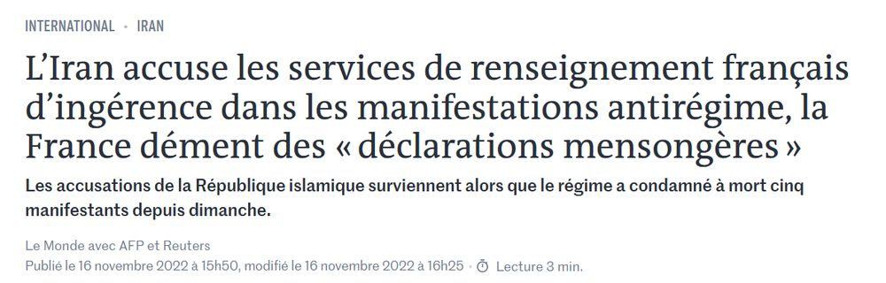
Complot ou pas ?Conspiracy or not?
Les théories du complot comme argument rhétoriqueConspiracy theories as a rhetorical device
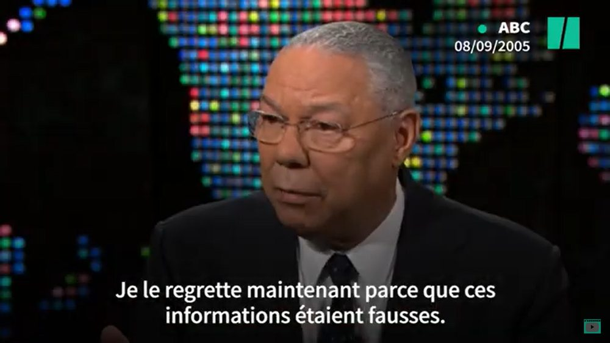
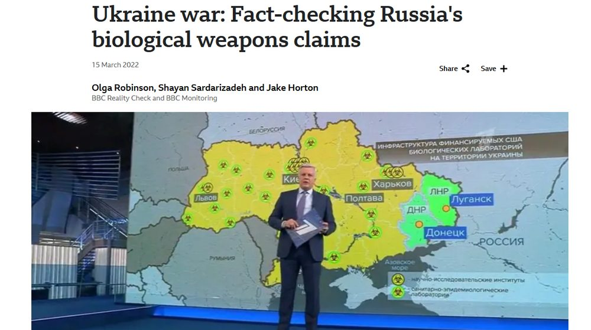
https://www.bbc.com/news/60711705
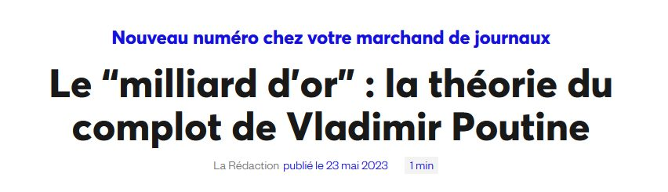
▸ Théorie du complot d’origine Russe de 1990 qui imagine que les occidentaux souhaitent accaparer l’ensemble de la richesse du globe pour uniquement un milliard d’individus.▸ A Russian conspiracy theory from 1990 imagining that Westerners want to hoard all of the world’s wealth for just one billion people.
▸ Comme souvent, il y a un fond de vrai (si le monde entier vivait comme les occidentaux, il n’y aurait plus assez de ressources).▸ As is often the case, there is a grain of truth (if the whole world lived like Westerners, there would not be enough resources).
▸ MAIS cela est extrapolé jusqu’à imaginer une agentivité consciente des occidentaux pour s’accaparer l’ensemble des richesses du globe VOIRE veulent réduire en esclavage ou tuer le reste de la population.▸ BUT this is stretched to the point of imagining a conscious intent by Westerners to seize all of the world’s wealth, or EVEN to enslave or kill the rest of the population.
Conséquence politique de cette théorie du complot :Political consequence of this conspiracy theory:
Théorie du complot d’origine russe, née en 1990 : les Occidentaux voudraient accaparer l’ensemble de la richesse du globe au profit d’un seul milliard d’individus.
Comme souvent, il y a un fond de vrai : si le monde entier vivait comme les Occidentaux, il n’y aurait plus assez de ressources.
Mais cela est extrapolé jusqu’à imaginer une intention consciente d’asservir ou d’éliminer le reste de la population.
fr.wikipedia.org/wiki/Golden_billion ; francetvinfo.fr, Vrai ou Fake : y a-t-il un « milliard d’or » ?
Conséquence de cette idéologie en AfriqueA consequence of this ideology in Africa
L’impact de l’information, même vraieThe impact of information, even when true
- L’exposition à des nouvelles angoissantes accroît le temps passé devant les informations.- Exposure to distressing news increases the time spent watching the news.
- Les personnes davantage exposées à ces nouvelles angoissantes montrent des symptômes d’anxiété plus importants.- People more exposed to this distressing news show greater anxiety symptoms.
L'art de persuader, convaincre ou impressionner un public en utilisant les mots de manière efficace.The art of persuading, convincing, or impressing an audience by using words effectively.
C'est donc une histoire d'influence.So it's really a matter of influence.
Êtes-vous influençable ?Are you easily influenced?
Nous sommes des créatures sociales, et donc très influençables. Deux exemples pour s'en convaincre.We are social creatures, and therefore highly susceptible to influence. Two examples to prove it.
L’influence sociale, ce n’est ni bien ni mal
L’influence sociale est un aspect fondamental de l’humanité.
Ce n’est pas bien ou mal, c’est comme ça.
La rhétorique est un moyen de convaincre par différents procédés : en avoir conscience permet de l’utiliser correctement, et de ne pas se faire avoir.
La rhétorique est donc liée à l’esprit critique : connaître les méthodes rhétoriques permet d’être plus vigilant.
Expérience classiqueA classic experiment
L'expérience d'AschAsch's experiment
Face à un groupe qui répond faux à l'unanimité, une personne sur trois se rallie à la mauvaise réponse, juste pour éviter le désaccord.Faced with a group that unanimously gives a wrong answer, one person in three goes along with the wrong answer too, just to avoid disagreement.
Une rhétorique nécessite…Rhetoric requires…
Un orateur, un interlocuteur, un auditoire et un langage.A speaker, a listener, an audience, and a language.
Elle est structurée autour d'une triple dimension : ethos, pathos, logos.It is structured around a triple dimension: ethos, pathos, logos.
Mots clésKey words
Cliquez sur chaque rôle.Click each role.
OrateurSpeaker
Personne qui tente de convaincre.The person trying to convince.
AuditoireAudience
Personne que l'on cherche à convaincre.The people you're trying to convince.
InterlocuteurInterlocutor
Personne à qui s'adresse l'orateur.The person the speaker is directly addressing.
Auditoire et interlocuteur ne sont pas forcément les mêmes personnes.The audience and the interlocutor aren't necessarily the same people.
1 des 4 manières de débattre1 of 4 ways to debate
MonologueMonologue
L'orateur cherche à convaincre un auditoire, mais l'auditoire ne peut pas lui répondre ou contre-argumenter.The speaker tries to convince an audience, but the audience cannot respond or counter-argue.
OrateurSpeaker
convainc →convinces →
Auditoire = InterlocuteurAudience = Interlocutor
Exemple : un discours politique.Example: a political speech.
🎤Politicien
👥Public
2 des 4 manières de débattre2 of 4 ways to debate
DélibérationDeliberation
On argumente pour convaincre l'interlocuteur, mais on peut aussi se laisser convaincre. L'idée est de parvenir à un consensus.We argue to convince the other person, but we can also let ourselves be convinced. The goal is to reach a consensus.
Personne APerson A
⇄ s'influencent⇄ influence each other
Personne BPerson B
Exemple : un couple cherche à décider quoi faire ce soir.Example: a couple deciding what to do tonight.
🙋Personne A
🙋♂️Personne B
3 des 4 manières de débattre3 of 4 ways to debate
CompétitionCompetition
Le but n'est pas de convaincre l'interlocuteur (l'adversaire) mais le public.The goal isn't to convince the other party (the opponent) but the audience.
Camp ASide A
rivalitérivalry
Camp BSide B
Auditoire : c'est lui qu'on cherche vraiment à convaincreAudience: the one you're really trying to convince
Exemple : un débat politique télévisé.Example: a televised political debate.
🧑💼Camp A
👩💼Camp B
👥Public
4 des 4 manières de débattre4 of 4 ways to debate
ConflitConflict
Le but n'est ni de convaincre l'interlocuteur, ni le public : c'est juste le « plaisir » de la joute verbale.The goal is neither to convince the other person nor the audience: it's just the "pleasure" of verbal sparring.
VousYou
joute verbaleverbal sparring
Beau-frèreBrother-in-law
Exemple : fin de repas de famille, débat avec ton beau-frère aux idées radicalement différentes des tiennes…Example: end of a family dinner, arguing with your brother-in-law whose views are radically different from yours…
🙂Vous
😤Beau-frère
Quelques exemplesA few examples
Monologue, délibération, compétition ou conflit ? Cliquez sur chaque situation.Monologue, deliberation, competition, or conflict? Click each situation.
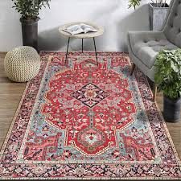
Tu cherches à obtenir une réduction sur le prix de ce magnifique tapis.You're trying to negotiate a discount on this magnificent rug.
DélibérationDeliberation
Vous négociez à deux : chacun peut infléchir l'autre, l'objectif est un accord sur le prix. C'est une délibération.The two of you negotiate: each can sway the other, the goal is agreement on a price. That's a deliberation.
Même situation… mais tu es avec tes amis, qui te chambrent souvent en disant que tu ne sais pas négocier.Same situation… but you're with your friends, who often tease you for being bad at negotiating.
CompétitionCompetition
Le vrai public, ce sont vos amis : vous ne cherchez plus vraiment à convaincre le vendeur, mais à leur prouver quelque chose.The real audience is your friends: you're no longer really trying to convince the seller, but to prove something to them.
L'avocat et le procureur affichent leurs désaccords sur la culpabilité du prévenu.The defence lawyer and the prosecutor argue over the defendant's guilt.
CompétitionCompetition
Ils ne cherchent pas à se convaincre l'un l'autre, mais à convaincre le juge ou le jury, le vrai public du procès.They aren't trying to convince each other, but to convince the judge or jury, the trial's real audience.
L'avocat fait sa plaidoirie.The lawyer delivers their closing argument.
MonologueMonologue
Un discours ininterrompu, comme un discours politique : personne ne peut contre-argumenter en direct.An uninterrupted speech, like a political address: no one can counter-argue live.
Pour qui est-ce que je débats ?Who am I debating for?
Même situation de départ, deux stratégies différentes.Same starting situation, two different strategies.
Endogroupe : mon campIn-group: my side
Convaincre / galvaniser les gens qui pensent déjà comme moi.Convince / rally people who already think like me.
Exogroupe : l'autre campOut-group: the other side
Convaincre les gens qui pensent différemment.Convince people who think differently.
Stratégie « endogroupe »"In-group" strategy
« Féministe, j'interpelle un propos machiste sur Twitter et montre avec véhémence à son auteur que ses propos sont inadmissibles. »"As a feminist, I call out a sexist comment on Twitter and forcefully show its author that what they said is unacceptable."
Stratégie « exogroupe »"Out-group" strategy
« Féministe, j'interpelle un propos machiste sur Twitter et tente d'argumenter avec l'auteur pour lui faire comprendre le sexisme de ses propos. »"As a feminist, I call out a sexist comment on Twitter and try to reason with its author to help them see the sexism in what they said."
Il n'y a pas de bonne ou de mauvaise stratégie : c'est un choix rhétorique et stratégique. En avoir conscience aide à comprendre ce qui se joue vraiment dans un débat.There's no right or wrong strategy: it's a rhetorical and strategic choice. Being aware of it helps you understand what's really at stake in a debate.
Endogroupe ou exogroupe ?
« Féministe, j’interpelle un propos machiste sur Twitter et tente d’argumenter avec l’auteur pour lui faire comprendre le sexisme de ses propos. »
« Féministe, j’interpelle un propos machiste sur Twitter et montre avec véhémence à son auteur que ses propos sont inadmissibles. »
Même sujet, même adversaire : mais dans le second cas, je parle à mon propre camp.
3 manières de faire de la rhétorique3 ways to do rhetoric
Cliquez sur chaque carte.Click each card.
Ethos
Convaincre par rapport à l'éthique.Convincing through ethics.
CliquezClick
La crédibilité, la réputation ou les valeurs de l'orateur.The speaker's credibility, reputation, or values.
Pathos
Convaincre grâce à l'émotion.Convincing through emotion.
CliquezClick
On touche l'empathie, la peur, l'indignation…It taps into empathy, fear, outrage…
Logos
Convaincre grâce à la logique.Convincing through logic.
Deux manières de faire de l'ethosTwo ways to do ethos
L'éthique « universelle »"Universal" ethics
Invoquer de grandes valeurs : la justice, la liberté, la solidarité…Invoking grand values: justice, freedom, solidarity…
L'éthique contextuelleContextual ethics
Se baser sur son propre statut, sa réputation, sa situation.Relying on one's own status, reputation, or situation.
« Il est scandaleux que dans le pays des Lumières, des gens dorment encore dehors. » « Le clonage, c'est mauvais, car c'est jouer à Dieu. »"It's a scandal that in the land of the Enlightenment, people still sleep outside." "Cloning is wrong, because it's playing God."
Ethos contextuelContextual ethos
Se baser sur le contexte pour donner du poids à sa positionUsing context to give weight to a position
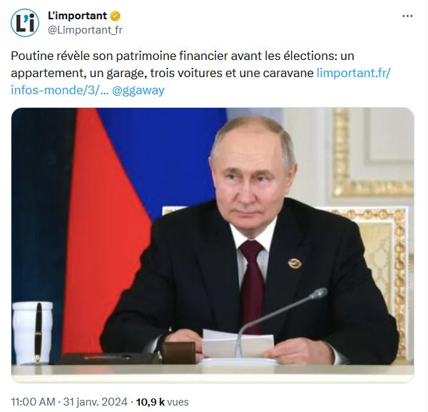
Vladimir Poutine
Affirme n'avoir qu'un petit appartement, un garage et 3 voitures, pour paraître proche du peuple. Son patrimoine réel est très largement contesté par les enquêtes journalistiques.Claims to own only a small flat, a garage, and 3 cars, to appear close to ordinary people. His actual wealth is heavily disputed by journalistic investigations.
Donald Trump
Explique avoir renoncé à son salaire de président, ce qui est vrai et vérifiable. Éthiquement, l'argument se défend.States he waived his presidential salary, which is true and verifiable. Ethically, the argument holds up.
Même procédé rhétorique, deux niveaux de véracité très différents : d'où l'importance de vérifier avant de se laisser convaincre par le personnage plutôt que par les faits.Same rhetorical device, two very different levels of truthfulness, which is why it matters to check facts before letting yourself be convinced by the persona rather than the facts.
L'éthos, un moyen puissant de délégitimer un argumentaireEthos, a powerful way to delegitimise an argument
Harrison Ford tient un discours sur l'urgence climatique sur France 2… avant de repartir dans son jet privé.Harrison Ford gives a speech about the climate emergency on French TV… before flying off in his private jet.
« Faites ce que je dis, pas ce que je fais »"Do as I say, not as I do"
La seule chose qu'on retient de son intervention, c'est cette hypocrisie, pas le fond de son propos sur le climat. Attaquer la personne plutôt que l'argument est très efficace… mais ce n'est pas toujours pertinent sur le fond. C'est ce qu'on appelle un argument ad hominem.The only thing people remember from his speech is this hypocrisy, not the substance of what he said about climate. Attacking the person rather than the argument is very effective… but it's not always relevant to the substance. This is what's called an ad hominem argument.
Chercher à convaincre par l'émotion, l'empathieTrying to convince through emotion, empathy
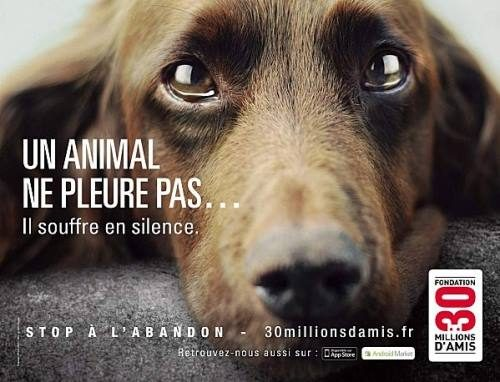
Très utilisé en politique (discours de Sarah Palin, États-Unis) comme sur les réseaux sociaux, pour galvaniser ou engranger des likes et des dons.Widely used in politics (Sarah Palin's speeches, US) as well as on social media, to rally supporters or rack up likes and donations.
Pathos · rumeur et peurPathos · rumour and fear
« They're eating the pets »
Lors d'un débat présidentiel télévisé, Donald Trump affirme que des migrants mangeraient les animaux de compagnie des habitants de Springfield : une rumeur sans fondement, mais qui frappe l'imagination et se propage à toute vitesse.During a televised presidential debate, Donald Trump claims migrants are eating the pets of Springfield residents: a baseless rumour, but one that captures the imagination and spreads at lightning speed.
Plus une affirmation est choquante, plus elle est virale, vraie ou pas.The more shocking a claim, the more viral it goes, true or not.
Le pouvoir de l'IA sur FacebookThe power of AI on Facebook
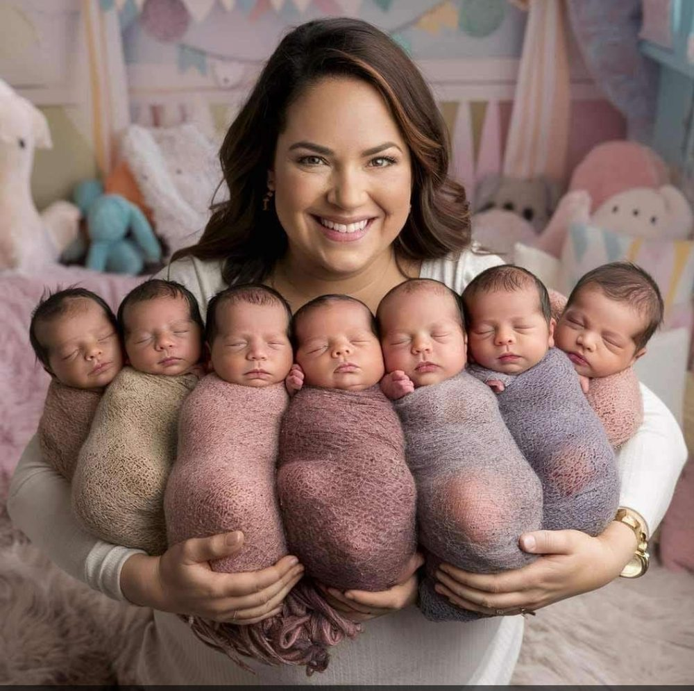
Le pathos, en images
Logos
Le syllogismeThe syllogism
Tous les hommes sont mortels. Socrate est un homme. DONC Socrate est mortel.All men are mortal. Socrates is a man. THEREFORE Socrates is mortal.
Tous les hommes sont mortels. La reine Margot est mortelle. DONC la reine Margot est un homme.All men are mortal. Queen Margot is mortal. THEREFORE Queen Margot is a man.
Même structure « logique », mais c'est un sophisme : la forme ressemble à un syllogisme valide, le fond ne l'est pas.Same "logical" structure, but it's a fallacy: the form looks like a valid syllogism, the substance isn't.
Vous êtes ministre de l’Économie : vous devez annoncer une augmentation d’impôts pour couvrir le déficit public.You are the finance minister: you must announce a tax increase to cover the public deficit.
EthosEthos
LogosLogos
PathosPathos
ExerciceExercise
Vous êtes député : vous voulez convaincre l’Assemblée d’envoyer des armes supplémentaires en Ukraine.You are an MP: you want to convince Parliament to send more weapons to Ukraine.
EthosEthos
LogosLogos
PathosPathos
ExerciceExercise
Vous êtes député : vous voulez convaincre l’Assemblée d’arrêter d’envoyer des armes supplémentaires en Ukraine.You are an MP: you want to convince Parliament to stop sending more weapons to Ukraine.
EthosEthos
LogosLogos
PathosPathos
Les questions à se poser sur le prochain discoursQuestions to ask about the next speech
Quel est le but de l’orateur ?What is the speaker’s goal?
Comment peut-on résumer son propos en quelques phrases ?How can the speech be summed up in a few sentences?
Comment parvient-il à son but ?How does the speaker achieve that goal?
Quelles sont toutes les techniques qu’il utilise ?What techniques does the speaker use?
Les raisonnements fallacieux
« Les adolescents qui écoutent du rock et du métal sont meilleurs en orthographe »
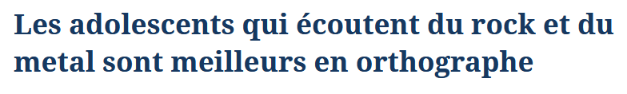
« C’est bien la preuve qu’il faut promouvoir l’écoute du rock et du métal ! »
Une personne qui s'endort tout habillée, chaussures comprises, a souvent trop bu la veille, ce qui explique aussi le mal de tête. Les chaussures ne causent rien : les deux ont une cause commune.Someone who falls asleep fully dressed, shoes included, has often had too much to drink the night before, which also explains the headache. The shoes cause nothing: both share a common cause.
ConcomitanceCoincidence
Plus Nicolas Cage sort de films, plus il y a de morts dans les piscines aux États-Unis.The more films Nicolas Cage releases, the more people drown in swimming pools in the US.
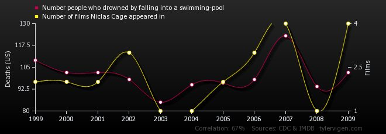
Une coïncidence statistique amusante… mais aucun lien de cause à effet.An amusing statistical coincidence… but no cause-and-effect link.
CorrélationCorrelation
Plus on consomme de produits transformés, plus il y a de cancers.The more processed food we eat, the more cancer cases there are.
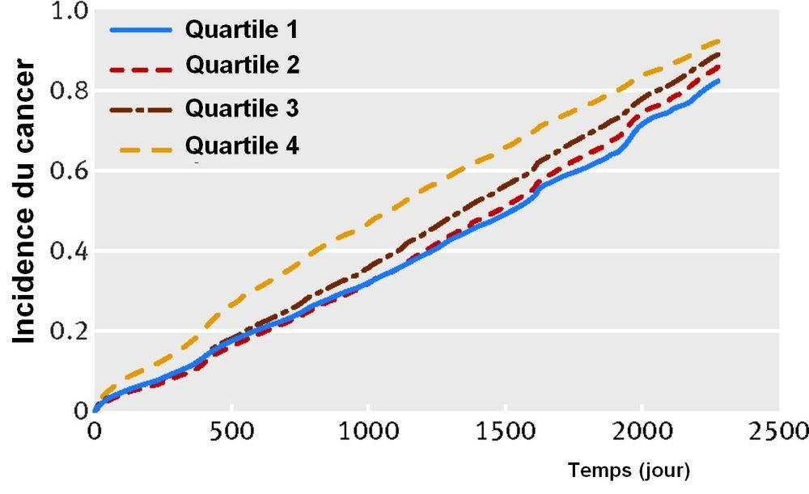
Source : étude Nutrinet-Santé, un lien statistique réel, mais qui ne prouve pas à lui seul la causalité.Source: the Nutrinet-Santé study, a real statistical link, but one that alone doesn't prove causation.
Étude de casCase study
Le chocolat aide-t-il à décrocher un prix Nobel ?Does chocolate help you win a Nobel Prize?
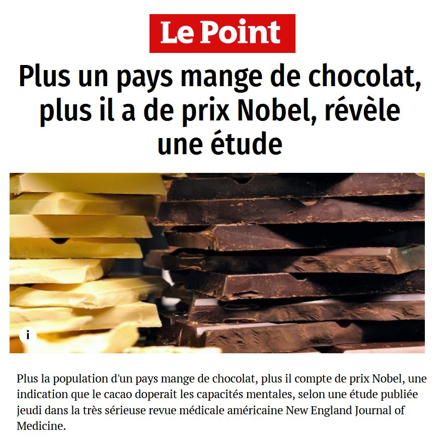
En mettant simplement deux courbes côte à côte, sans jamais affirmer de causalité, on peut quand même laisser le lien se former dans l'esprit du lecteur. Est-ce alors une Fake News… ou juste une présentation trompeuse ?By simply putting two curves side by side, without ever claiming causation, you can still let the link form in the reader's mind. Is that fake news… or just a misleading presentation?
Étude de cas : le biais de causalitéCase study: the causality bias
Un adolescent meurt après une vaccination contre le papillomavirusA teenager dies after an HPV vaccination
« Le produit vaccinal ne serait pas en cause. »"The vaccine itself does not appear to be at fault."Agence Régionale de Santé, conclusion de l'enquêteRegional Health Agency, investigation conclusion
Deux évènements rapprochés dans le temps (concomitance) ont été lus comme une causalité, avant même la fin de l'enquête. C'est le biais de causalité : notre cerveau cherche toujours une explication, quitte à en inventer une trop vite.Two events close together in time (coincidence) were read as causation, even before the investigation ended. This is the causality bias: our brain always looks for an explanation, even if it means inventing one too fast.
Concernant les théories du complot
Des liens de causalité sont établis entre différents éléments, ce qui entraîne une pensée complotiste, là où il n’y a peut-être que coïncidence ou corrélation.
« Comme par hasard. »
Par exemple : les vaccins et l’autisme.
Autre exemple : la volonté d’adhésion de l’Ukraine à l’OTAN et l’attaque russe.
Le piège des moyennesThe trap of averages
« Les ménages français détiennent en moyenne un patrimoine net de 446 000 € »"French households hold an average net worth of €446,000"
« C'est bien la preuve que la plupart des Français sont riches ! »"That's proof most French people are rich!"
Une moyenne peut être tirée vers le haut par une minorité très riche. Elle ne dit rien de la situation du Français « typique » : c'est la médiane qu'il faudrait regarder pour ça, et elle est bien plus basse.An average can be pulled upward by a very wealthy minority. It says nothing about the "typical" French person's situation: you'd need to look at the median for that, and it's much lower.
SophismeFallacy
Le biais d'autoritéAppeal to authority
Considérer qu'une personne qui a de l'autorité a forcément raison.Assuming that a person with authority must be right.
« Je suis le scientifique le plus cité au monde ! »"I'm the most cited scientist in the world!"
Être très cité, très diplômé ou très suivi ne rend pas une affirmation vraie : l'autorité ne remplace jamais la preuve. (Voir aussi le schéma de l'expérience de Milgram sur l'obéissance à l'autorité.)Being highly cited, highly qualified, or widely followed doesn't make a claim true: authority never replaces evidence. (See also Milgram's experiment on obedience to authority.)
« Mon voisin est un idiot, et il a des moustaches. Donc tous les moustachus sont des idiots. »"My neighbour is an idiot, and he has a moustache. So all men with moustaches are idiots."
Généraliser à partir d'un seul cas (ou d'un tout petit nombre) à l'ensemble d'un groupe.Generalising from a single case (or a tiny number) to an entire group.
ExempleExample
La Gen Z et la cigaretteGen Z and cigarettes
Quelques TikTok, souvent ironiques, deviennent toute une « génération ».A handful of TikToks, often ironic, become an entire “generation”.
« Vous êtes végétariens ? Vous savez qui d'autre était végétarien ? »"You're vegetarian? You know who else was vegetarian?"
Hitler ! Associer une idée à une personne détestable ne prouve rien sur la valeur de cette idée : c'est un raccourci rhétorique bien connu, popularisé sous le nom de « loi de Godwin ».Hitler! Linking an idea to a hated person proves nothing about the idea's worth: it's a well-known rhetorical shortcut, popularised as "Godwin's law".
SophismeFallacy
Le « vrai » écossaisThe "true" Scotsman
« Tous les Écossais sont roux ! - Non, mon voisin est écossais, et il a les cheveux blonds. - Alors ce n'est pas un vrai écossais ! »"All Scotsmen have red hair! - No, my neighbour is Scottish, and he has blond hair. - Then he's not a true Scotsman!"
Plutôt que d'admettre l'exception, on redéfinit la règle pour qu'elle reste vraie « par définition ».Rather than admit the exception, the rule gets redefined so it stays true "by definition".
SophismeFallacy
Le biais de la popularitéPopularity bias
Un champion adoré du public vend… des voitures. Ce n'est pas son expertise automobile qui convainc, c'est la sympathie qu'il inspire.A champion beloved by the public sells… cars. It's not his automotive expertise that convinces us, it's the likeability he inspires.
Considérer qu'une chose est bonne parce qu'elle est ancienne.Assuming that something is good because it's old.
« Ma boulangerie existe depuis 1659, elle est donc forcément bonne ! » « Cette technique de soin est utilisée depuis l'Antiquité ! »"My bakery has existed since 1659, so it must be good!" "This treatment has been used since Antiquity!"
SophismeFallacy
Appel à la nouveautéAppeal to novelty
Considérer qu'une chose est forcément meilleure parce qu'elle est nouvelle : le symétrique exact de l'appel à l'ancienneté.Assuming something is necessarily better because it's new: the exact mirror of the appeal to tradition.
Appel à l’exotisme
Considérer que si quelque chose vient d’un lointain pays, c’est forcément bien.
Exemple du PowerPoint : « Les secrets sacrés de l’Inde appliqués au monde occidental ».
SophismeFallacy
L'appel à la natureAppeal to nature
Considérer que si quelque chose est naturel, c'est forcément bon.Assuming that if something is natural, it must be good.
« Tu devrais goûter ce champignon, il est délicieux et 100 % naturel ! »"You should try this mushroom, it's delicious and 100% natural!"
Les champignons les plus toxiques sont, eux aussi, parfaitement naturels.The most toxic mushrooms are also perfectly natural.
ExempleExample
La Gen Z et la cigaretteGen Z and cigarettes
« À base de plantes » : la cigarette serait meilleure parce que naturelle. Elle reste pourtant plus toxique et plus addictive que la vapoteuse.“Plant-based”: cigarettes would be better because they're natural. Yet they remain more toxic and more addictive than vaping.
Considérer qu'un évènement entraînera forcément des conséquences bien plus graves par la suite.Assuming that one event will necessarily lead to much more serious consequences down the line.
« Si nous masquons les paquets de cigarettes, demain on nous demandera de masquer nos bouteilles de vin ! Et ce sera la fin de notre terroir ! »"If we hide cigarette packs today, tomorrow they'll ask us to hide our wine bottles! And that'll be the end of our heritage!"
Considérer que les choses « évidentes » sont forcément vraies.Assuming that "obvious" things must be true.
« La Terre est plate, c'est évident ! »"The Earth is flat, it's obvious!"
SophismeFallacy
Le sophisme du pire ailleursThe "worse elsewhere" fallacy
Expliquer qu'il existe des situations plus graves ailleurs, pour justifier ou minimiser une situation présente.Pointing to worse situations elsewhere, to justify or minimise a present one.
« Pourquoi défendre le droit des femmes en France ? Allez donc en Afghanistan ! »"Why defend women's rights in France? Go to Afghanistan instead!"
SophismeFallacy
Le faux dilemmeThe false dilemma
Ne présenter que deux options, alors que d'autres sont tout aussi possibles.Presenting only two options, when other possibilities exist just as well.
« Si vous êtes CONTRE cette loi, vous êtes POUR les assassins d'enfants ! »"If you're AGAINST this law, you're FOR child murderers!"
Le faux dilemme, dans la vraie vieThe false dilemma, in real life
Un exemple observé sur les réseaux sociaux américainsAn example observed on American social media
Réduire tout un débat politique à deux camps opposés (ici « l'Amérique » contre « le communisme ») est un faux dilemme classique, quel que soit le bord politique qui l'utilise.Reducing an entire political debate to two opposing camps (here "America" versus "communism") is a classic false dilemma, whichever political side uses it.
SophismeFallacy
Le sophisme du juste milieuThe middle ground fallacy
Considérer que la solution intermédiaire est toujours la plus juste.Assuming the middle-ground solution is always the fairest one.
Maintien de l'esclavage, ou abolition totale de l'esclavage ? Le « compromis » entre les deux n'est pas plus juste que l'une des deux positions.Keep slavery, or abolish it entirely? The "compromise" between the two is no fairer than either position.
Quiz : repérez le sophismeQuiz: spot the fallacy
Cliquez sur chaque carte pour découvrir la réponse.Click each card to reveal the answer.
« Cette technique de soin est utilisée depuis l'Antiquité, elle doit forcément être efficace. »"This treatment has been used since Antiquity, so it must be effective."
Appel à l'anciennetéAppeal to tradition
L'ancienneté d'une pratique ne dit rien de son efficacité réelle.How old a practice is says nothing about how effective it actually is.
« Si on commence à réguler ce produit, demain on interdira tout, et après-demain on nous enlèvera nos libertés ! »"If we start regulating this product, tomorrow they'll ban everything, and the day after they'll take away our freedoms!"
Pente savonneuseSlippery slope
Une chaîne de conséquences de plus en plus graves, présentée comme inévitable sans le démontrer.A chain of increasingly serious consequences, presented as inevitable without proving it.
« Tu es contre cette loi ? Donc tu es pour les criminels ! »"You're against this law? So you're for criminals!"
Faux dilemmeFalse dilemma
Seulement deux options sont présentées, alors que d'autres positions nuancées existent.Only two options are presented, when other nuanced positions exist.
« Mon adversaire veut réguler un peu les banques : il veut donc détruire le capitalisme ! »"My opponent wants some bank regulation: so he wants to destroy capitalism!"
Homme de pailleStraw man
On déforme la position réelle de l'adversaire pour la rendre plus facile à attaquer.The opponent's real position is distorted to make it easier to attack.
« Personne n'a prouvé que les extraterrestres n'existent pas, donc ils existent. »"No one has proven aliens don't exist, so they exist."
Appel à l'ignoranceAppeal to ignorance
L'absence de preuve du contraire n'est pas une preuve.Absence of evidence to the contrary is not evidence.
« Ce produit est 100 % naturel, donc il ne peut pas être dangereux. »"This product is 100% natural, so it can't be dangerous."
Appel à la natureAppeal to nature
Naturel ne veut pas dire inoffensif : de nombreux poisons sont parfaitement naturels.Natural doesn't mean harmless: plenty of poisons are perfectly natural.
« Un million de personnes ne peuvent pas se tromper ! »"A million people can't be wrong!"
Appel à la popularitéAppeal to popularity
Le nombre de personnes qui croient une chose ne la rend pas vraie pour autant.The number of people who believe something doesn't make it true.
« Trouvons un compromis : gardons l'esclavage un jour sur deux. »"Let's find a compromise: keep slavery every other day."
Sophisme du juste milieuMiddle ground fallacy
Le compromis entre une position juste et une position injuste n'est pas automatiquement le plus juste.The compromise between a just position and an unjust one isn't automatically the fairest.
Quel sophisme reconnaissez-vous ?
Effet David contre Goliath.
Et ici ?
Appel à la popularité.
Et là ?
Appel à l’ancienneté.
Et pour finir ?
Témoignage personnel.
Cours 5
Complotisme et politique
Comment les théories du complot sont-elles reliées à la politique ?
Trois manières principales.
impliqueLa théorie du complot implique des politiques.
corrèleLa pensée complotiste corrèle avec des valeurs politiques.
utilisentLes politiques utilisent le complot comme stratégie rhétorique.
La théorie du complot impliquant des politiques
Théories du complot impliquant des actions politiques
Generic Conspiracy Scale (Brotherton et al., 2013)
Il n’y a pas qu’une catégorie de théories du complot
« Le gouvernement autorise ou perpètre des actes de terrorisme sur son propre sol, en dissimulant son implication. »
« Un petit groupe secret de personnes est responsable de toutes les grandes décisions mondiales, comme celle d’aller en guerre. »
« Des preuves de contact extraterrestre sont dissimulées au public. »
« Des technologies dotées de capacités de contrôle mental sont utilisées sur des personnes à leur insu. »
« Des groupes de scientifiques manipulent, fabriquent ou suppriment des preuves afin de tromper le public. »
Six catégories
🏛️Malversation gouvernementale.
🌍Malveillance globale.
👽Dissimulation extraterrestre.
💊Bien-être personnel.
📰Contrôle de l’information.
👥Complot des minorités, par exemple « le grand remplacement ».
Les politiciens sont partout !
(complot ?)
Pourquoi ?
La pensée complotiste corrèle avec des valeurs politiques
Une courbe en U : le complotisme est plus fort aux deux extrémités de l’axe gauche-droite qu’au centre.
Extrême gauche, centre, extrême droite.
Pourquoi ?
Un positionnement « hors système ».
« Conspiracy theories are for losers » : on adhère davantage quand on perd.
Un plus grand rejet du statu quo.
Conspiracy mentality and political orientation across 26 countries
Le complotisme et la politique
https://doi.org/10.1038/s41562-021-01258-7
Sauf que…
Il faut distinguer les théories du complot génériques…
…des théories du complot contextuelles.
Les deux ne réagissent pas aux mêmes variables.
Cinq affirmations, deux camps
« Kamala Harris est un homme. »
« Trump est contrôlé par la Russie. »
« Les élections américaines de 2020 ont été truquées. »
« Barack Obama n’est pas né aux États-Unis. »
« Trump n’a pas vraiment eu le COVID. »
Le biais partisan
Le camp auquel j’appartiens décide de quelles théories du complot je suis prêt à entendre.
Un même évènement, deux complots
« C’est un coup des Républicains pour faire de Trump un martyr. »
Le lien entre croyances complotistes et valeurs politiques
Freeden, 2001
Idéologie politique
« Ensemble d’idées, de croyances, de valeurs et d’opinions, présentant un schéma récurrent, qui rivalise délibérément ainsi qu’involontairement pour proposer des plans d’action dans l’élaboration des politiques publiques, dans le but de justifier, expliquer, contester ou changer les arrangements et processus sociaux et politiques d’une communauté politique. »
Attitude caractérisée par une considération positive du passé ou du statu quo (principes et procédures établis), et parfois, mais pas nécessairement, par une méfiance envers le changement.
Lien avec les théories du complot
Conservatisme et complotisme
Pas d’asymétrie systématique : à gauche comme à droite, on croit surtout aux complots qui accusent le camp d’en face.
Sources (articles de la bibliothèque) : Enders, A., Farhart, C., Miller, J., Uscinski, J., Saunders, K., & Drochon, H. (2022). Are Republicans and Conservatives More Likely to Believe Conspiracy Theories? Political Behavior, 45(4), 2001-2024. https://doi.org/10.1007/s11109-022-09812-3 | Imhoff, R., Zimmer, F., Klein, O., et al. (2022). Conspiracy mentality and political orientation across 26 countries. Nature Human Behaviour, 6(3), 392-403. https://doi.org/10.1038/s41562-021-01258-7 | Nera, K., Wagner-Egger, P., Bertin, P., Douglas, K. M., & Klein, O. (2021). A power-challenging theory of society, or a conservative mindset? Upward and downward conspiracy theories as ideologically distinct beliefs. European Journal of Social Psychology, 51(4-5), 740-757. https://doi.org/10.1002/ejsp.2769
Définition
Autoritarisme
Prééminence, hypertrophie de l’autorité, érigée en valeur suprême. Un régime politique autoritaire cherche, par divers moyens (propagande, encadrement de la population, répression), la soumission et l’obéissance de la société.
Lien avec les théories du complot
Autoritarisme et complotisme
L’autoritarisme prédit fortement les complots qui défendent l’ordre établi contre une menace extérieure, et peu ceux qui l’attaquent.
Sources (articles de la bibliothèque) : Wood, M. J., & Gray, D. (2019). Right-wing authoritarianism as a predictor of pro-establishment versus anti-establishment conspiracy theories. Personality and Individual Differences, 138, 163-166. https://doi.org/10.1016/j.paid.2018.09.036 | Hartman, T. K., Marshall, M., Stocks, T. V. A., et al. (2021). Different Conspiracy Theories Have Different Psychological and Social Determinants: Comparison of Three Theories About the Origins of the COVID-19 Virus in a Representative Sample of the UK Population. Frontiers in Political Science, 3. https://doi.org/10.3389/fpos.2021.642510 | Dyrendal, A., Kennair, L. E. O., & Bendixen, M. (2021). Predictors of belief in conspiracy theory: The role of individual differences in schizotypal traits, paranormal beliefs, social dominance orientation, right wing authoritarianism and conspiracy mentality. Personality and Individual Differences, 173, 110645. https://doi.org/10.1016/j.paid.2021.110645
Définition
Anomie
Un sentiment d’aliénation et de désespoir dans une société ou un groupe.
Lien avec les théories du complot
Anomie et complotisme
Les inégalités économiques nourrissent l’anomie, le sentiment que la société se délite, qui nourrit à son tour le complotisme.
Sources (articles de la bibliothèque) : Jetten, J., Peters, K., & Salvador Casara, B. G. (2022). Economic inequality and conspiracy theories. Current Opinion in Psychology, 47, 101358. https://doi.org/10.1016/j.copsyc.2022.101358 | Hattersley, M., Skipper, Y., Douglas, K. M., & Jolley, D. (2025). The Interplay Between Economic Hardship, Anomie, and Conspiracy Beliefs in Shaping Anti-Immigrant Sentiment. Journal of Applied Social Psychology, 55(8), 600-623. https://doi.org/10.1111/jasp.70002
Définition
Orientation de dominance sociale (SDO)
Une tendance dispositionnelle à accepter, voire à préférer, des circonstances qui maintiennent les inégalités sociales, combinée à une préférence générale pour les structures sociales hiérarchiques.
Lien avec les théories du complot
Dominance sociale et complotisme
La SDO prédit la croyance aux complots, indépendamment de l’autoritarisme et de la mentalité complotiste.
Sources (articles de la bibliothèque) : Dyrendal, A., Kennair, L. E. O., & Bendixen, M. (2021). Predictors of belief in conspiracy theory: The role of individual differences in schizotypal traits, paranormal beliefs, social dominance orientation, right wing authoritarianism and conspiracy mentality. Personality and Individual Differences, 173, 110645. https://doi.org/10.1016/j.paid.2021.110645 | Hartman, T. K., Marshall, M., Stocks, T. V. A., et al. (2021). Different Conspiracy Theories Have Different Psychological and Social Determinants: Comparison of Three Theories About the Origins of the COVID-19 Virus in a Representative Sample of the UK Population. Frontiers in Political Science, 3. https://doi.org/10.3389/fpos.2021.642510
Définition
Populisme
Toute approche politique qui a tendance à opposer le peuple aux élites politiques, économiques, médiatiques, culturelles ou intellectuelles, en se réclamant du premier.
Lien avec les théories du complot
Populisme et complotisme
Sur 39 théories du complot, le populisme fait partie des liens les plus forts, quelle que soit la théorie.
Sources (articles de la bibliothèque) : Uscinski, J., Enders, A., Diekman, A., et al. (2022). The psychological and political correlates of conspiracy theory beliefs. Scientific Reports, 12(1). https://doi.org/10.1038/s41598-022-25617-0 | Papaioannou, K., Pantazi, M., & van Prooijen, J.-W. (2022). Unravelling the relationship between populism and belief in conspiracy theories: The role of cynicism, powerlessness and zero-sum thinking. British Journal of Psychology, 114(1), 159-175. https://doi.org/10.1111/bjop.12602
Analyse factorielle
Mes résultats
Le plan de l’étude
Variables dépendantes : malversation gouvernementale, complot des minorités.
Le chiffrage de la BBC et celui du Trésor français convergent : le coût est réel, et il n’a rien de secret.
bbc.com/news/business-64450882
Le paradoxe
Certains politiciens fragilisent la société via le complotisme.
Ces modifications sociétales renforcent le complotisme.
Ce complotisme risque de profiter à ces politiciens.
Une boucle
Politiciens
Instabilité politique
Citoyens
Comment s’en sortir ?
À l’échelle individuelle : renforcer l’esprit critique, développer la réflexion.
À l’échelle sociale : jouer sur les facteurs qui impactent la société : chercher une meilleure stabilité politique, augmenter la confiance envers les institutions.
Merci !Thank you!
Après la séanceAfter the session
Le bilan, les jeux, et votre retourSummary, games, and your feedback
Scannez ce QR code : vous pourrez donner votre retour, revoir le bilan de la formation ou rejouer aux jeux.Scan this QR code: you can leave your feedback, review the session summary, or play the games again.


![QR code vers la page antoninatger.github.io/interventions/retours]() antoninatger.github.io/interventions/retours →antoninatger.github.io/interventions/retours →
antoninatger.github.io/interventions/retours →antoninatger.github.io/interventions/retours →
Martine 🌻 @martine_lili · 1 h
Honteux !!! Mettre un monsieur de 82 ans à la rue… Ces belles-filles sont des p*******s sans cœur 🤬
Kévin @kev_du_94 · 1 h
Bande de s*****s. J'espère qu'elles vont tout perdre elles aussi
Sandrine B. @sandrine_b · 58 min
Le pauvre… 😢 Il a travaillé toute sa vie pour cette maison et ces deux c*******s le jettent dehors
Le Vrai Gaulois @vraigaulois · 55 min
Voilà la famille aujourd'hui. Plus aucun respect pour les anciens. Des o*****s, rien d'autre.
Juju @juju_off · 52 min
Moi à sa place je les déshérite direct ces m*****s 😤
Nathalie G. @nath_g62 · 50 min
Je pleure en voyant ça. Comment on peut faire ça à son beau-père ?? Elles n'ont aucune honte
Dédé du 13 @dede13 · 47 min
Qu'elles viennent me dire ça en face, les p*****s 👊
Sophie @sophie_75 · 44 min
Partagez un max !!! Il faut que tout le monde sache ce que ces v*******s ont fait 🔁
Thomas @thomas_lit · 41 min
Attendez, en fait, on n'a pas tous les éléments… Lisez ça avant de vous énerver 👇
francelive.fr/paul-82-ans-la-verite
Gégé @gerard_retraite · 39 min
Courage Paul ❤️ Et honte à ces deux c*******s, le karma va les rattraper
Lucas @lucas_33 · 35 min
Elles mériteraient d'être expulsées à leur tour, on verra si elles rigolent 😡
Karine 🐾 @karine_animo · 31 min
Dégoûtée de l'humanité. L'argent, toujours l'argent. Des r******s, ces bonnes femmes.
MaxPower @maxpower_off · 28 min
Quelqu'un a leurs noms ? Faut les afficher partout, ces s*****s 😠
Brigitte @brigitte_l · 25 min
Pauvre homme… 82 ans !! Où va le monde 😭😭